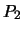
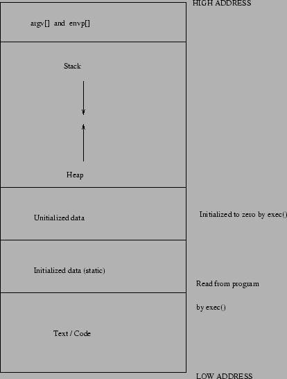

A short introduction to operating systems
Mark Burgess
October 3, 2001
An operating system is a layer of software which takes care of
technical aspects of a computer's operation.
It shields the user
of the machine from the low-level details of the machine's operation
and provides frequently needed facilities. There is no universal
definition of what an operating system consists of. You can think of
it as being the software which is already installed on a machine,
before you add anything of your own. Normally the operating system has
a number of key elements: (i) a technical layer of software for
driving the hardware of the computer, like disk drives, the keyboard
and the screen; (ii) a filesystem which provides a way of
organizing files logically, and (iii) a simple command
language which enables users to run their own
programs and to manipulate their files in a simple way. Some
operating systems also provide text editors, compilers, debuggers and
a variety of other tools. Since the operating system (OS) is in charge
of a computer, all requests to use its resources and devices need to
go through the OS. An OS therefore provides (iv) legal entry
points
into its code for performing basic operations like writing to devices.
Operating systems may be classified by both how many tasks they can
perform `simultaneously' and by how many users can be using the system
`simultaneously'. That is: single-user
or multi-user and single-task or
multi-tasking. A multi-user system must clearly be
multi-tasking. The table below shows some examples.
| OS |
Users |
Tasks |
Processors |
| MS/PC DOS |
S |
S |
1 |
| Windows 3x |
S |
QM |
1 |
| Macintosh System 7.* |
S |
QM |
1 |
| Windows 9x |
S |
M* |
1 |
| AmigaDOS |
S |
M |
1 |
| hline
MTS |
M |
M |
1 |
| UNIX |
M |
M |
|
| VMS |
M |
M |
1 |
| NT |
S/M |
M |
|
| Windows 2000 |
M |
M |
|
| BeOS (Hamlet?) |
S |
M |
|
The first of these (MS/PC DOS/Windows 3x)
are single user, single-task systems which build on a ROM based
library of basic functions called the BIOS. These are
system calls which write to the screen or to disk etc. Although all
the operating systems can service interrupts,
and therefore simulate the appearance of multitasking in some
situations, the older PC environments cannot be thought of as a
multi-tasking systems in any sense. Only a single user application
could be open at any time. Windows 95 replaced the old coroutine
approach of quasi-multitasking with a true context switching approach,
but only a single user system, without proper memory
protection. Windows NT added a proper kernel with memory protection,
based on the VMS system, originally written for the DEC/Vax. Later
versions of Windows NT and Windows 2000 (a security and kernel
enhanced version of NT) allow multiple logins also through a terminal
server. Windows 2000 thus has comparable functionality to Unix in this
respect.
The Macintosh system 7 can be
classified as single-user quasi-multitasking1.1. That means that it is possible to use several user
applications simultaneously. A window manager can simulate the
appearance of several programs running simultaneously, but this relies
on each program obeying specific rules in order to achieve the
illusion. The MacIntosh not a true multitasking system in the sense
that, if one program crashes, the whole system crashes. Windows
is purported to be preemptive multitasking but most program crashes
also crash the entire system. This might be due to the lack of proper
memory protection. The claim is somewhat confusing.
AmigaDOS is an operating system for the Commodore
Amiga computer. It is based on the UNIX model and is a fully
multi-tasking, single-user system. Several programs may be actively
running at any time. The operating system includes a window
environment which means that each independent program has a `screen'
of its own and does not therefore have to compete for the screen with
other programs. This has been a major limitation on multi-tasking
operating systems in the past.
MTS (Michigan timesharing system) was the first
time-sharing multi-user system1.2. It
supports only simple single-screen terminal based input/output and has
no hierarchical file system.
Unix is arguably the most important operating system today, and one
which we shall frequently refer to below. It comes in many forms,
developed by different manufacturers. Originally designed at AT&T,
UNIX split into two camps early on: BSD (Berkeley software
distribution) and system 5 (AT&T license).
The BSD version was
developed as a research project at the university of Berkeley,
California. Many of the networking and user-friendly features
originate from these modifications. With time these two versions have
been merged back together and most systems are now a mixture of both
worlds. Historically BSD Unix has been most prevalent in universities,
while system 5 has been dominant in business environments. The trend
during the last three years by Sun Microsystems and Hewlett-Packard
amongst others has been to move towards system 5, keeping only the
most important features of the BSD system. A standardization committee
for Unix called POSIX, formed by the major vendors, attempts to bring
compatibility to the Unix world. Here are some common versions of
UNIX.
| Unix |
Manufacturer |
Mainly BSD / Sys 5 |
| BSD |
Berkeley |
BSD |
| SunOS (solaris 1) |
Sun Microsystems |
BSD/sys 5 |
| Solaris 2 |
Sun Microsystems |
Sys 5 |
| Ultrix |
DEC/Compaq |
BSD |
| OSF 1/Digital Unix |
DEC/Compaq |
BSD/sys 5 |
| HPUX |
Hewlett-Packard |
Sys 5 |
| AIX |
IBM |
Sys 5 / BSD |
| IRIX |
Silicon Graphics |
Sys 5 |
| GNU/Linux |
Public Domain |
Posix (Sys V/BSD) |
| SCO unix |
Novell |
Sys 5 |
Note that the original BSD source code is now in the public domain.
Unix is generally regarded as the most portable and powerful operating
system available today by impartial judges, but NT is improving
quickly. Unix runs on everything from laptop computers to CRAY
mainframes. It is particularly good at managing large database
applications and can run on systems with hundreds of processors.
Most Unix types support symmetric multithreaded processing and
all support simultaneous logins by multiple users.
NT is a `new' operating system from Microsoft based on the old VAX/VMS
kernel from the Digital Equipment Corporation (VMS's inventor moved to
Microsoft) and the Windows32 API. Initially it reinvented many
existing systems, but it is gradually being forced to adopt many open
standards from the Unix world. It is fully multitasking, and can
support multiple users (but only one at a time-- multiple logins by
different users is not possible). It has virtual memory and
multithreaded support for several processors. NT has a built in
object model and security framework which is amongst the most modern
in use.
The Be operating system, originally developed for a new multimedia
computer called the BeBox, is also new and is a fully multitasking
OS. It is optimized for multimedia and is now saleable software
developed by Be.Com after the new computer concept failed due to lack
of financial backing. BeOS has proper memory protection but allows
direct access to video memory (required for fast video games). It also
has virtual memory, is pre-emptive multitasking and is based on a
microkernel design. Is shares little with Unix except for a Bash
shell, a POSIX programming interface and about 150 Unix commands
(including Perl).
Before discussing more of the details, let's review some key ideas
which lie behind the whole OS idea. Although these ideas may seem
simple, you will do well to keep them in mind later. Simple ideas
often get lost amongst distracting details, but it is important to
remember that the ideas are simple.
A hierarchy is a way of organizing information using levels of
detail. The phrase high-level implies few details, whereas low-level implies a lot of detail, down in the guts of things. A
hierarchy usually has the form of a tree, which branches from the
highest level to the lowest, since each high-level object is
composed of several lower-level objects. The key to making large
computer programs and to solving difficult problems is to create a
hierarchical structure, in which large high-level problems are
gradually broken up into manageable low-level problems. Each level
works by using a series of `black boxes' (e.g. subroutines) whose
inner details are not directly visible. This allows us to hide details
and remain sane as the complexity builds up.
This is the single most important concept in computing! It is used
repeatedly to organize complex problems.
Figure 1.1:
The hierarchy is the most important concept in computing.
|
A computer is not just a box which adds numbers together. It has resources like the keyboard and the screen, the disk drives and the
memory. In a multi-tasking system there may be several programs which
need to receive input or write output simultaneously and thus the
operating system may have to share these resources between several
running programs. If the system has two keyboards (or terminals)
connected to it, then the OS can allocate both to different
programs. If only a single keyboard is connected then competing
programs must wait for the resources to become free.
Most multi-tasking systems have only a single central processor
unit and yet this is the most precious resource a computer has. An
multi-tasking operating system must therefore share cpu-time
between programs. That is, it must work for a time on one program,
then work a while on the next program, and so on. If the first program
was left unfinished, it must then return to work more on that, in a
systematic way. The way an OS decides to share its time between
different tasks is called scheduling.
The exchange of information is an essential part of computing. Suppose
computer A sends a message to computer B reporting on the names
of all the users and how long they have been working. To do
this it sends a stream of bits across a network. When computer B receives
a stream of bits, it doesn't automatically know what they mean.
It must decide if the bits represent numbers or characters, integers
or floating point numbers, or a mixture of all of them. These different
types of data are all stored as binary information - the only
difference between them is the way one chooses to interpret them.
The resolution to this problem is to define a protocol. This is
a convention or agreement between the operating systems of two
machines on what messages may contain. The agreement may say, for
instance, that the first thirty-two bits are four integers which give
the address of the machine which sent the message. The next thirty-two
bits are a special number telling the OS which protocol to use in
order to interpret the data. The OS can then look up this protocol and
discover that the rest of the data are arranged according to a pattern
of
<name><time><name><time>...
where the name is a string of bytes, terminated by a zero, and the time
is a four byte digit containing the time in hours. Computer B now
knows enough to be able to extract the information from the stream of
bits.
It is important to understand that all computers have to agree on the
way in which the data are sent in advance. If the wrong
protocol is diagnosed, then a string of characters could easily
be converted into a floating point number - but the result would
have been nonsense. Similarly, if computer A had sent the information
incorrectly, computer B might not be able to read the data and a
protocol error would arise.
More generally, a protocol is an agreed sequence
of behaviour which must be followed.
For example, when passing parameters to functions in a computer
program, there are rules about how the parameter should be declared
and in which order they are sent. This is a simple example of a
protocol. Protocols are an important part of communication and data
typing and they will appear in many forms during our discussion of
operating systems.
An operating system is itself a computer program which must be
executed. It therefore requires its own share of a computer's
resources. This is especially true on multitasking systems, such as
UNIX, where the OS is running all the time along side users'
programs. Since user programs have to wait for the OS to perform
certain services, such as allocating resources, they are slowed down
by the OS1.3. The time spent by the OS servicing user requests is called
the system overhead. On a multi-user system one would like this
overhead to be kept to a minimum, since programs which make many
requests of the OS slow not only themselves down, but all other
programs which are queuing up for resources.
In the UNIX C-shell (csh) environment, it is possible to find out the
exact fraction of time spent by the OS working on a program's behalf
by using the time function.
Caching is a technique used to speed up
communication with slow devices. Usually the CPU can read data much
faster from memory than it can from a disk or network connection, so
it would like to keep an up-to-date copy of frequently used
information in memory. The memory area used to do this is called a
cache. You can think of the whole of the primary memory as
being a cache for the secondary memory (disk).
Sometimes caching is used more generally to mean `keeping a local
copy of data for convenience'.
Here we list the main hardware concepts.
1.2.1 The CPU
The CPU, or central processor unit is the heart and soul of
every computer. This is the part which does the work of executing
machine instructions. Traditionally, it is just one microprocessor
with lots of pins to connect is to memory and devices - usually
identifiable by being the largest chip. On modern machines, there may
be several CPUs which can work in parallel. Also VLSI or very
large scale integration technology has made it possible to put very
many separate processors and memory into a single package, so the
physical distinction between the CPU and its support chips is getting
blurred. Nevertheless, the CPU is still logically separate from the
memory and devices.
The CPU is driven by a `clock' or pulse generator. Each instruction
completes in a certain number of `clock cycles'.
Traditionally CPUs are based on CISC (Complex Instruction Set
Computing) architecture, where a single instruction takes one or more
clock cycles to complete. A new trend is to build RISC
(Reduced Instruction Set Computing) processors which aim to be more
efficient for a subset of instructions by using redundancy. These have
simpler instructions but can execute much more quickly, sometimes with
several instructions per clock cycle.
The primary memory is the most important resource a computer
has. Since CPUs are only made with instructions for reading and
writing to memory, no programs would be able to run without it. There
are two types of memory: RAM - random access memory, or read/write
memory, which loses its contents when the machine is switched off, and
ROM - read only memory, which never loses its contents unless
destroyed. ROM is normally used for storing those most fundamental
parts of the operating system which are required the instant a
computer is switched on, before it knows about disks etc.
1.2.3 Devices
The concepts of a device really
has two parts. There is the hardware unit which is connected to the
machine, and there is the logical device
which is a name given by the OS to a legal entry point for
talking to a hardware-device. When a user writes to a logical device,
the OS invokes a device driver which
performs the physical operations of controlling the hardware. For
example, when writing to a disk, the OS must control the movement of
the read-write heads. When writing to a printer, the OS places the
information in a queue and services the request when the printer
becomes free.
Some common logical devices are: the system disks, the keyboard, the
screen, the printer and the audio device.
Disks and tapes are often called secondary memory or secondary storage.
Interrupts are hardware signals which are sent to the CPU by the
devices it is connected to. These signals literally interrupt the CPU
from what it is doing and demand that it spend a few clock cycles
servicing a request. For example, interrupts may come from the
keyboard because a user pressed a key. Then the CPU must stop what it
is doing and read the keyboard, place the key value into a buffer for
later reading, and return to what it was doing. Other `events'
generate interrupts: the system clock sends interrupts at periodic
intervals, disk devices generate interrupts when they have finished an
I/O task and interrupts can be used to allow computers to monitor
sensors and detectors. User programs can also generate `software
interrupts' in order to handle special situations like a `division by
zero' error. These are often called traps or exceptions on
some systems.
Interrupts are graded in levels. Low level interrupts have
a low priority, whereas high level interrupts have a high
priority. A high level interrupt can interrupt a low level interrupt,
so that the CPU must be able to recover from several `layers' of
interruption and end up doing what it was originally doing. This is
accomplished by means of a stack or heap1.4. Moreover, programs can
often choose whether or not they wish to be interrupted by setting an
interrupt mask which masks out the interrupts it does not want
to hear about. Masking interrupts can be dangerous, since data can be
lost. All systems therefore have non-maskable interrupts for the
most crucial operations.
In order to keep track of how the system resources are being used, an
OS must keep tables or lists telling it what is free an what is not.
For example, data cannot be stored neatly on a disk. As files become
deleted, holes appear and the data become scattered randomly over the
disk surface.
Spooling is a way of processing data serially. Print jobs are
spooled to the printer, because they must be printed in the right
order (it would not help the user if the lines of his/her file were
liberally mixed together with parts of someone elses file). During
a spooling operation, only one job is performed at a time and other
jobs wait in a queue to be processed. Spooling is a form of
batch processing.
Spooling comes from the need to copy data onto a spool of tape for storage.
It has since been dubbed Simultaneous Peripheral
Operation On-Line, which is a pretty lousy attempt
to make something more meaningful out of the word `spool'!
An important task of an operating system is to provide
black-box functions for the most frequently needed operations, so that
users do not have to waste their time programming very low level code
which is irrelevant to their purpose. These ready-made functions
comprise frequently used code and are called system calls.
For example, controlling devices requires very careful and complex
programming. Users should not have to write code to position the head
of the disk drive at the right place just to save a file to the disk.
This is a very basic operation which everyone requires and thus it
becomes the responsibility of the OS. Another example is mathematical
functions or graphics primitives.
System calls can be thought of as a very simple protocol -
an agreed way of asking the OS to perform a service. Some typical
OS calls are: read, write (to screen, disk, printer etc),
stat (get the status of a file: its size and type) and
malloc (request for memory allocation).
On older microcomputers, where high level languages are
uncommon, system calls are often available only through
assembler or machine code. On modern systems and integrated
systems like UNIX, they are available as functions in a high
level language like C.
Commands like
dir ; list files (DOS)
ls ; list files (UNIX)
cd ; change directory
copy file prn ; copy file to printer
myprog ; execute program `myprog'
constitute a basic command language. Every computer must
have such a language (except perhaps the Macintosh - yawn!).
In microcomputer operating systems the
command language is often built into the system code, whereas on
larger systems (UNIX) the commands are just executable programs
like the last example above.
The command language deals typically with: file management, process
management and text editing.
In creating a system to store files we must answer some basic
questions.
- Should the filesystem distinguish between types of
files e.g. executable files, text files, scripts. If so how? One way
is to use file extensions, or a naming convention to identify files, like
myprog.exe, SCRIPT.BAT, file.txt. The problem with this
is that the names can be abused by users. If one tries to execute a file
which is not meant to be executed, the result would be nonsense and might even be dangerous to the point of crashing the system. One way around this
problem is to introduce a protocol or standard format for
executable files, so that when the OS opens a file for execution it first
checks to see whether the file obeys the protocol. This method is
used for binary files in UNIX, for instance.
- Protection. If several users will be storing files
together on the same disk, should each user's files be exclusive to
him or her?
- Is a mechanism required for sharing files between several
users?
- A hierarchical filesystem is a good starting point for
organizing files, but it can be too restrictive. Sometimes it is useful
to have a file appear in several places at one time. This can be
accomplished with links. A link is not a copy of a file, but a
pointer to where a file really is. By making links to other places in
a hierarchical filesystem, its flexibility is increased considerably.
Multitasking cannot be fully exploited if each user has only one output
terminal (screen). Each interactive program needs its own screen and
keyboard1.5. There are three solutions to
this problem:
- Several physical screens can be attached to the computer.
This is expensive and probably wasteful.
- Toggling between `logical screens'. By pressing a key on the keyboard
the user can switch between two different images, which are separately
maintained in memory.
- Window system.
The technology for the last of these solutions has only been available
for a few years. While it is clearly the best of the three
(and can be combined with ), it requires a considerable amount of
memory and CPU power to implement. The problem of overlapping windows
requires there to be a manager which controls the sharing of space
on the screen. All of the graphics must be drawn and redrawn continuously.
The operating system must provide primitives for doing this.
We shall not consider windowing further in this text, but it is worth
bearing in mind that the principles are very similar to those of
operating systems. Sharing and management are the key concepts.
Before proceeding, you should note that the design of operating
systems is an active area of research. There are no universal
solutions to the issues that we shall discuss, rather OS design must
be thought of as a study of compromises. Hopefully you will get a
feel for this during the course of the tutorial.
- What are the key ingredients of an operating system?
- What is the usefulness of system calls?
- What is the difference between primary and secondary storage.
- What is a logical device?
- Should different users be able to change one another's data?
If so, under what circumstances?
- How do hardware devices send signals to the CPU?
Before tackling the complexities of multi-tasking, it is useful to
think about the operation of a single-task OS without all the clutter
that multi-tasking entails. In a multi-task OS the features we shall
discuss below have to be reproduced -times and then augmented by
extra control structures.
The key elements of a single-task computer are shown in figure
2.1. Roughly speaking, at the hardware level a computer
consists of a CPU, memory and a number of peripheral devices. The CPU
contains registers or `internal variables' which control its
operation. The CPU can store information only in the memory it can
address and in the registers of other microprocessors it is connected
to. The CPU reads machine code instructions, one at a time, from
the memory and executes them forever without stopping.
Here is a brief summary of the types of register a CPU has. Some
microprocessors have several of each type.
| Register |
Purpose |
| Accumulator |
Holds the data currently being worked on. |
| Program counter |
Holds the address of the next instruction |
| |
to be executed |
| Index (addressing) registers |
Used to specify the address of
data to be loaded into or |
| |
saved from the accumulator, or operated on in some way. |
| Stack pointer |
Points to the top of the CPUs |
| |
own hardware controlled stack. |
| Status register |
Contains status information after each instruction |
| |
which can be tested for to detect errors etc. |
The memory, as seen by the CPU, is a large string of bytes starting
with address and increasing up to the maximum address. Physically
it is made up, like a jigsaw puzzle, of many memory chips and control
chips. mapped into the diagram shown. Normally, because of the
hardware design of the CPU, not all of the memory is available to the
user of the machine. Some of it is required for the operation of the
CPU.
The roughly distinguished areas in figure 2.1 are
- Zero page: The first
t `page' of the memory is often reserved for a special purpose. It is
often faster to write to the zero page because you don't have to code
the leading zero for the address - special instructions for the zero
page can leave the `zero' implicit.
- Stack: Every CPU needs a stack for executing subroutines. The stack is explained in more detail below.
- User programs: Space the user programs can `grow into'.
- Screen memory: What you see on the screen of a computer
is the image of an area of memory, converted into colours and
positions by a hardware video-controller. The screen memory is the
area of memory needed to define the colour of every `point' or `unit'
on the screen. Depending on what kind of visual system a computer
uses, this might be one byte per character and it might be four bytes
per pixel!
- Memory mapped I/O: Hardware devices like disks and
video controllers contain smaller microprocessors of their own.
The CPU gives them instructions by placing numbers into their registers.
To make this process simpler, these device registers (only a few bytes
per device, perhaps) are `wired' into the main memory map, so that writing
to the device is the same as writing to the rest of the memory.
- Operating system: The operating system itself
is a large program which often
takes up a large part of the available memory.
Note that this figure is very simplified. It does not show, for instance,
special memory which might be located inside the
devices or CPU. Such memory is often used for caching. Also it does
not show how the various components are connected together by means
of a high speed data bus.
Figure 2.1:
A simple schematic memory map of a microcomputer. The order of the
different segments of memory can vary depending on the system.
|
A stack is a so-called last-in first-out (LIFO) data
structure. That is to say - the last thing to be placed on top of a
stack, when making it, is the first item which gets removed when
un-making it. Stacks are used by the CPU to store the current
position within a program before jumping to subroutines, so that they
remember where to return to after the subroutine is finished. Because
of the nature of the stack, the CPU can simply deposit the address of
the next instruction to be executed (after the subroutine is
finished) on top of the stack. When the subroutine is finished, the CPU
pulls the first address it finds off the top of the stack and jumps to
that location.
Notice that the stack mechanism will continue to work even if the
subroutine itself calls another subroutine, since the second subroutine
causes another stack frame to be saved on the top of the stack.
When that is finished, it returns to the first subroutine and then
to the original program in the correct order.
On many older microcomputers and in many operating systems the stack
is allocated with a fixed size in advance. If too many levels of
nested subroutines are called, the stack can overflow. Consider the
following example code for a stack.
//
// A simple stack handler.
//
// Use the commands "push" and "pop" to push onto the stack and to pop
// "out" of the stack. The allocated stacksize is very small so that
// an overflow can occur if you push too far!! e.g. input
//
// push 23
// push 4
// pop
// push 678
// quit
//
// In a real stack handler the numbers would be the address of the next
// instruction to return to after completing a subroutine.
//
// The program is compiled with
//
// g++ stack.C
//
// MB 1994
//
//*********************************************************************
#include <iostream.h>
#include <strstream.h>
#include <string.h>
//**********************************************************************
// Include file
//**********************************************************************
const int forever = 1;
const int stacksize = 10;
const int bufsize = 20;
//**********************************************************************
class Stack
{
public:
int stack[stacksize];
Stack();
void ShowStack();
void Push(int);
int Pop();
private:
int stackpointer;
};
//**********************************************************************
// Level 0
//**********************************************************************
main ()
{ char input[bufsize];
char command[5];
int number, newnumber;
Stack s;
cout << "Stack demo\n\n";
s.ShowStack();
while (forever)
{
cout << "Enter command: ";
// Extract command
cin.getline(input,bufsize);
istrstream(input,sizeof(input)) >> command >> number;
// Interpret command
if (strcmp(command,"push") == 0)
{
s.Push(number);
}
else if (strcmp(command,"pop")==0)
{
newnumber = s.Pop();
}
else if (strcmp(command,"quit")==0)
{
break;
}
else
{
number = 0;
cout << "Bad command\n\n";
}
s.ShowStack();
}
s.ShowStack();
}
//**********************************************************************
// Class Stack
//**********************************************************************
Stack::Stack()
{ int i;
stackpointer = 0;
for (i = 0; i < stacksize; i++)
{
stack[i] = 0;
}
}
//**********************************************************************
void Stack::Push (int n)
{
cout << "Pushing " << n << " on the stack\n";
if (stackpointer >= stacksize)
{
cerr << "Stack overflow!\n";
return;
}
stack[stackpointer] = n;
stackpointer++;
}
//**********************************************************************
int Stack::Pop ()
{
if (stackpointer == 0)
{
cerr << "Stack underflow!\n";
return 0;
}
stackpointer--;
cout << "Popped " << stack[stackpointer] << " from stack\n";
return (stack[stackpointer]);
}
//**********************************************************************
void Stack::ShowStack ()
{ int i;
for (i = stacksize-1; i >= 0; i--)
{
cout << "stack[" << i << "] = " << stack[i];
if (i == stackpointer)
{
cout << " <<-- Pointer\n";
}
else
{
cout << endl;
}
}
}
In this example, only numbers are stored. At the hardware level, this
kind of stack is used by the CPU to store addresses and registers
during machine-code subroutine jumps. Operating systems also use software controlled stacks during the execution of users' programs.
High level languages subroutines can have local variables which are
also copied to the stack as one large stack frame during the
execution of subroutines.
Input arrives at the computer at unpredictable intervals. The system
must be able to detect its arrival and respond to it.
Interrupts are hardware triggered signals which cause the CPU to
stop what it is doing and jump to a special subroutine. Interrupts
normally arrive from hardware devices, such as when the user presses
a key on the keyboard, or the disk device has fetched some data from
the disk. They can also be generated in software by errors like
division by zero or illegal memory address.
When the CPU receives an interrupt, it saves the contents of its
registers on the hardware stack and jumps to a special routine
which will determine the cause of the interrupt and respond to
it appropriately. Interrupts occur at different levels. Low level
interrupts can be interrupted by high level interrupts. Interrupt
handling routines have to work quickly, or the computer will be
drowned in the business of servicing interrupts. For certain
critical operations, low level interrupts can be ignored by
setting a mask (See also the generalization of this for
multiuser systems in chapter 4).
There is no logical difference between what happens during the
execution of an interrupt routine and a subroutine. The difference
is that interrupt routines are triggered by events, whereas
software subroutines follow a prearranged plan.
An important area is the interrupt vector. This is a region
of memory reserved by the hardware for servicing of interrupts.
Each interrupt has a number from zero
to the maximum number of interrupts supported on the CPU;
for each interrupt, the interrupt
vector must be programmed with the address of a routine which is
to be executed when the interrupt occurs. i.e. when an interrupt
occurs, the system examines the address in the interrupt vector
for that interrupt and jumps to that location. The routine exits
when it meets an RTI (return from interrupt) instruction.
The CPU and the devices attached to it do not work at the same speed.
Buffers are therefore needed to store incoming or outgoing
information temporarily, while it is waiting to be picked up by
the other party. A buffer is simply an area of memory which works
as a waiting area. It is a first-in first-out (FIFO) data
structure or queue.
To start an I/O operation, the CPU writes appropriate values into
the registers of the device controller. The device controller acts on
the values it finds in its registers. For example, if the operation
is to read from a disk, the device controller fetches data from the
disk and places it in its local buffer. It then signals the
CPU by generating an interrupt.
While the CPU is waiting for the I/O to complete it may do one of two
things. It can do nothing or idle until the device returns with
the data (synchronous I/O), or it can continue doing something else
until the completion interrupt arrives (asynchronous I/O). The
second of these possibilities is clearly much more efficient.
Very high speed devices could place heavy demands on the CPU for
I/O servicing if they relied on the CPU to copy data word by word.
The DMA controller is a device which copies blocks of data
at a time from one place to the other, without the intervention of
the CPU. To use it, its registers must be loaded with the information
about what it should copy and where it should copy to. Once this is done,
it generates an interrupt to signal the completion of the task. The
advantage of the DMA is that it transfers large amounts of data before
generating an interrupt. Without it, the CPU would have to copy the
data one register-full at a time, using up hundreds or even thousands
of interrupts and possibly bringing a halt to the machine!
- What is the program counter?
- Explain why a stack is used to store local variables.
- Some microprocessors (68000/Intel 386 upward)
support multitasking internally. A separate stack is
then needed for each process. How can this be
achieved?
- Write a program to create a stack (LIFO) which can store any
number of local variables for each subroutine.
Hint: use a linked list for the stack and for the variables.
- Write a program to implement a buffer (FIFO).
- When a computer is first switched on, it executes a program called
a bootstrap program. This comes from the expression `to lift oneself
by one's own bootstraps'. The computer must begin to execute instructions
and `get going'. Find out for yourself, or speculate on how this takes
place.
- What is a stack-frame?
- What is memory mapped I/O?
To make a multi-tasking OS we need loosely to reproduce all of the
features discussed in the last chapter for each task or process which
runs. It is not
necessary for each task to have its own set of devices. The
basic hardware resources of the system are shared between the tasks.
The operating system must therefore have a `manager' which shares
resources at all times. This manager is called the `kernel' and
it constitutes the main difference between single and multitasking
operating systems.
3.1.1 Users - authentication
If a system supports several users, then each user must have his or her
own place on the system disk, where files can be stored. Since each
user's files may be private, the file system should record the
owner of each file. For this to be possible, all users must
have a user identity or login name and must supply a
password which prevents others from impersonating them. Passwords
are stored in a cryptographic (coded) form. When a user logs in, the OS encrypts
the typed password and compares it to the stored version.
Stored passwords are never decrypted for comparison.
On a multi-user system it is important that one user should not
be able to interfere with another user's activities, either purposefully
or accidentally. Certain commands and system calls are therefore not
available to normal users directly. The super-user is a
privileged user (normally the system operator) who has permission
to do anything, but normal users have restrictions placed on them
in the interest of system safety.
For example: normal users should never be able to halt the system; nor
should they be able to control the devices connected to the computer, or
write directly into memory without making a formal request of the OS.
One of the tasks of the OS is to prevent collisions between users.
It is crucial for the security of the system that different tasks,
working side by side, should not be allowed to interfere with one
another (although this occasionally happens in microcomputer
operating systems, like the Macintosh, which allow several programs to
be resident in memory simultaneously). Protection mechanisms are
needed to deal with this problem. The way this is normally done is to
make the operating system all-powerful and allow no user to access the
system resources without going via the OS.
To prevent users from tricking the OS, multiuser systems are based on
hardware which supports two-mode operation: privileged
mode for executing OS instructions and user mode for working on
user programs. When running in user mode a task has no special
privileges and must ask the OS for resources through system
calls. When I/O or resource management is performed, the OS takes over
and switches to privileged mode. The OS switches between these
modes personally, so provided it starts off in control of the system,
it will alway remain in control.
- At boot-time, the system starts in privileged mode.
- During user execution, it is switched to user mode.
- When interrupts occur, the OS takes over and
it is switched back to privileged mode.
Other names for privileged
mode are monitor mode or supervisor mode.
To prevent users from gaining control of devices, by tricking the
OS, a mechanism is required to prevent them from writing to an
arbitrary address in the memory. For example, if the user could
modify the OS program, then it would clearly be possible to gain control
of the entire system in privileged mode. All a user would have to
do would be to change the addresses in the interrupt vector
to point to a routine of their own making. This routine would then
be executed when an interrupt was received in privileged mode.
The solution to this problem is to let the OS define a segment of
memory for each user process and to check, when running in user mode,
every address that the user program refers to. If the user
attempts to read or write outside this allowed segment, a segmentation fault is generated and control returns to the OS. This
checking is normally hard-wired into the hardware of the computer so
that it cannot be switched off.
No checking is required in privileged
mode.
//******************************************************************
//
// Example of a segmentation fault in user mode
//
//******************************************************************
main() // When we start, we are by definition in user mode.
{ int *ptr;
ptr = 0; // An address guaranteed to NOT be in our segment.
cout << *ptr;
}
3.1.5 Time sharing
There is always the problem in a multi-tasking system that a user program
will go into an infinite loop, so that control never returns to the OS
and the whole system stops. We have to make sure that the OS always
remains in control by some method. Here are two possibilities:
-
The operating system fetches each instruction from the user program
and executes it personally, never giving it directly to the CPU.
The OS software switches between different processes by fetching
the instructions it decides to execute.
This
is a kind of software emulation. This method works, but it is
extremely inefficient because the OS and the user program are always
running together. The full speed of the CPU is not realized.
This method is often used to make simulators and
debuggers.
-
A more common method is to switch off the OS while the user program
is executing and switch off the user process while the OS is
executing. The switching is achieved by hardware rather than
software, as follows.
When handing control to a user program, the OS uses a hardware timer
to ensure that control will return after a certain time. The OS
loads a fixed time interval into the timer's control registers
and gives control to the user process. The timer then
counts down to zero and when it reaches zero it generates a
non-maskable interrupt, whereupon control returns to the
OS.
We can represent a multi-tasking system schematically as in figure
3.1. Clearly the
memory map of a computer does not look like this figure. It looks
like the figures in the previous chapter, so the OS has to simulate
this behaviour using software. The point of this diagram is only that
it shows the elements required by each process executing on the
system.
Figure 3.1:
Schematic diagram of a multitasking system.
|
Each program must have a memory area to work in and a stack
to keep track of subroutine calls and local variables.
Each
program must have its own input/output sources. These cannot
be the actual resources of the system: instead, each program
has a virtual I/O stream. The operating system arranges
things so that the virtual I/O looks, to the user program, as
though it is just normal I/O. In reality, the OS controls all
the I/O itself and arranges the sharing of resources transparently.
The virtual output stream for a program might be a window
on the real screen, for instance. The virtual printer is really
a print-queue. The keyboard is only `connected' to one task
at a time, but the OS can share this too. For example, in a window
environment, this happens when a user clicks in a particular window.
So far we have talked about the OS almost as though it were a
living thing. In a multitasking, multi-user OS like UNIX this is not a
bad approximation to the truth! In what follows we make use of
UNIX terminology and all of the examples we shall cover later
will refer to versions of the UNIX operating system.
The part of the OS which handles all of the details of sharing
and device handling is called the kernel or core.
The kernel is not something which can be used directly, although
its services can be accessed through system calls. What is needed
is a user interface or command line interface (CLI) which
allows users to log onto the machine and manipulate files,
compile programs and execute them using simple commands.
Since this is a layer of software which
wraps the kernel in more acceptable clothes, it
is called a shell around the kernel.
It is only by making layers of software, in a hierachy that
very complex programs can be written and maintained. The idea of
layers and hierarchies returns again and again.
The UNIX kernel is a very large program, but it does not perform
all of the services required in an OS. To keep the size of
the kernel to a minimum, it only deals with the sharing of
resources. Other jobs for operating system (which we can call
services) are implemented by writing program which
run along side user's programs. Indeed, they are
just `user programs' - the only
difference is that are owned by the system.
These programs are called daemons. Here are some example from UNIX.
- mountd: Deals with requests for `mounting' this machine's disks
on other machines - i.e. requests to access the disk on this machine
from another machine on the network.
- rlogind: Handles requests to login from remote terminals.
- keyserv: A server which stores public and private keys. Part of a
network security system.
- syslogd: Records information about important events in a log file.
- named: Converts machine names into their network addresses and
vice versa.
3.5 Multiprocessors - parallelism
The idea of constructing computers with more than one CPU
has become more popular recently. On a system with several CPUs
it is not just a virtual fact that several tasks can be
performed simultaneously - it is a reality. This introduces a
number of complications in OS design. For example - how can we
stop two independent processors from altering some
memory location which they both share simultaneously (so that
neither of them can detect the collision)? This is
a problem in process synchronization. The solution to this
problem is much simpler in a single CPU system since no two things
ever happen truly simultaneously.
We shall consider this in more detail in later chapters. For now it is
useful to keep in mind that multiprocessors are an important element
of modern OS design.
- Write a program to manage an array of many stacks.
- Describe the difference between the kernel and daemons
in UNIX. What is the point of making this distinction?
- What is two-mode operation?
- What is the difference between an emulator or simulator
and true multi-tasking?
- To prepare to for the project suggestion in the next chapter,
write a program which reads fictitious commands in from a file.
The commands should be of the form:
operator operand
load 12
add 23
store 1334
jsr 5678
wait 1
fork 0
etc. Read in the commands and print out a log of what the commands are,
in the form "Executing (operator) on (operand)". You should be
able to recognize the commands `wait' and `fork' specially, but the
other commands may be anything you like. The aim is to simulate the
type of commands a real program has to execute.
Multitasking and multi-user systems need to distinguish between the
different programs being executed by the system. This is accomplished with
the concept of a process.
Before talking about process management we shall introduce some of
the names which are in common use. Not all operating systems or books
agree on the definitions of these names. In this chapter we shall
take a liberal attitude - after all, it is the ideas rather
than the names which count. Try to remember the different terms - they
will be used repeatedly.
- Process:
This is a general term for a program which is
being executed. All work done by the CPU contributes to the
execution of processes. Each process has a descriptive information
structure associated with it (normally held by the kernel) called
a process control block which keeps track of how far the
execution has progressed and what resources the process holds.
- Task:
On some systems processes are called tasks.
- Job:
Some systems distinguish between batch execution and
interactive execution. Batch (or queued) processes are often called
jobs. They are like production line processes which start, do something
and quit, without stopping to ask for input from a user. They are
non-interactive processes.
- Thread: (sometimes called a lightweight process) is different
from process or task in that a thread is not enough to get a whole
program executed. A thread is a kind of stripped down process -
it is just one `active hand' in a program - something which the CPU
is doing on behalf of a program, but not enough to be called a
complete process. Threads remember what they have done separately,
but they share the information about what resources a program is
using, and what state the program is in. A thread is only a CPU
assignment. Several threads can contribute to a single task. When
this happens, the information about one process or task is used by
many threads. Each task must have at least one thread in order to do
any work.
- CPU burst: A period of uninterrupted CPU activity.
- I/O burst: A period of uninterrupted input/output activity.
On most multitasking systems, only one process can truly be active at
a time - the system must therefore
share its time between the execution of many
processes. This sharing is called scheduling.
(Scheduling
time management.)
Different methods of scheduling are appropriate for different kinds
of execution. A queue is one form of scheduling in which each
program waits its turn and is executed serially. This is not very
useful for handling multitasking, but it is necessary for
scheduling devices which cannot be shared by nature. An example
of the latter is the printer. Each print job has to be completed before
the next one can begin, otherwise all the print jobs would be mixed
up and interleaved resulting in nonsense.
We shall make a broad distinction between two types of scheduling:
- Queueing. This is appropriate for serial or batch jobs
like print spooling and requests from a server. There are two main ways
of giving priority to the jobs in a queue. One is a first-come
first-served (FCFS) basis, also referred to as first-in first-out
(FIFO); the other is to process the shortest job first (SJF).
- Round-robin. This is the time-sharing approach
in which several tasks can coexist. The scheduler gives a short time-slice
to each job, before moving on to the next job, polling each task round and
round. This way, all the tasks advance, little by little, on a controlled
basis.
These two categories are also referred to as non-preemptive
and preemptive respectively, but there is a grey area.
- Strictly non-preemptive Each program continues
executing until it has finished, or until it must wait for an event (e.g.
I/O or another task). This is like Windows 95 and MacIntosh
system 7.
- Strictly preemptive The system decides how time is
to be shared between the tasks, and interrupts each process after its
time-slice whether it likes it or not. It then executes another program
for a fixed time and stops, then the next...etc.
- Politely-preemptive?? The system decides how
time is to be shared, but it will not interrupt a program if it is in
a critical section. Certain sections of a program may be so
important that they must be allowed to execute from start to finish
without being interrupted. This is like UNIX and Windows NT.
To choose an algorithm for scheduling tasks we have to understand what
it is we are trying to achieve. i.e. What are the criterea for scheduling?
- We want to maximize the efficiency of the machine.
i.e. we would like all the resources of the machine to be doing useful
work all of the time - i.e. not be idling during one process, when
another process could be using them. The key to organizing the
resources is to get the CPU time-sharing right, since this is the
central `organ' in any computer, through which almost everything must
happen. But this cannot be achieved without also thinking about how
the I/O devices must be shared, since the I/O devices communicate by
interrupting the CPU from what it is doing. (Most workstations spend
most of their time idling. There are enormous amounts of untapped CPU
power going to waste all over the world each day.)
- We would like as many jobs to get finished as quickly
as possible.
- Interactive users get irritated if the performance of
the machine seems slow. We would like the machine to appear fast for
interactive users - or have a fast response time.
Some of these criterea cannot be met simultaneously and we must make
compromises. In particular, what is good for batch jobs is often not
good for interactive processes and vice-versa, as we remark under
Run levels - priority below.
Complex scheduling algorithms distinguish between short-term and
long-term scheduling. This helps to
deal with tasks which fall into two kinds: those
which are active continuously and
must therefore be serviced regularly, and those which sleep for long
periods.
For example, in UNIX the long term scheduler moves
processes which have been sleeping for more than a certain time
out of memory and onto disk, to make space for those which
are active. Sleeping jobs are moved back into memory
only when they wake up (for whatever reason). This is called
swapping.
The most complex systems have several levels of scheduling and
exercise different scheduling polices for processes with
different priorities. Jobs can even move from level to
level if the circumstances change.
Figure 4.1:
Multi-level scheduling.
|
Rather than giving all programs equal shares of CPU time, most systems
have priorities. Processes with higher priorities are either serviced
more often than processes with lower priorities, or they get longer
time-slices of the CPU.
Priorities are not normally fixed but vary according to the
performance of the system and the amount of CPU time a process has
already used up in the recent past. For example, processes which
have used a lot of CPU time in the recent past often have their
priority reduced. This tends to favour iterative processes which
wait often for I/O and makes the response time of the system seem
faster for interactive users.
In addition, processes may be reduced in priority if their total
accumulated CPU usage becomes very large. (This occurs, for example
in UNIX). The wisdom of this approach is arguable, since programs which
take a long time to complete tend to be penalized. Indeed, they take
must longer to complete because their priority is reduced. If the
priority continued to be lowered, long jobs would never get
finished. This is called process starvation and must be
avoided.
Scheduling algorithms have to work without knowing how long processes
will take. Often the best judge of how demanding a program will be is
the user who started the program. UNIX allows users to reduce the
priority of a program themselves using the nice command.
`Nice' users are supposed to sacrifice their own self-interest for
the good of others. Only the system manager can increase the
priority of a process.
Another possibility which is often not considered, is that of
increasing the priority of resource-gobbling programs in order
to get them out of the way as fast as possible. This is very difficult
for an algorithm to judge, so it must be done manually by the system
administrator.
Switching from one running process to another running process
incurs a cost to the system. The values of all the registers
must be saved in the present state, the status of all open files
must be recorded and the present position in the program must be
recorded. Then the contents of the MMU must be stored for the process
(see next chapter).
Then all those things must be read in for the next process,
so that the state of the system is exactly as it was when the
scheduler last interrupted the process. This is called a
context switch. Context switching is a system overhead. It costs
real time and CPU cycles, so we don't want to context switch too often,
or a lot of time will be wasted.
The state of each process is saved to a
data structure in the kernel called a process control block (PCB).
Here is an example PCB from Mach OS:
typedef struct machpcb
{
char mpcb_frame[REGOFF];
struct regs mpcb_regs; /* user's saved registers */
struct rwindow mpcb_wbuf[MAXWIN]; /* user window save buffer */
char *mpcb_spbuf[MAXWIN]; /* sp's for each wbuf */
int mpcb_wbcnt; /* number of saved windows in pcb_wbuf */
struct v9_fpu *mpcb_fpu; /* fpu state */
struct fq mpcb_fpu_q[MAXFPQ]; /* fpu exception queue */
int mpcb_flags; /* various state flags */
int mpcb_wocnt; /* window overflow count */
int mpcb_wucnt; /* window underflow count */
kthread_t *mpcb_thread; /* associated thread */
}
machpcb_t;
Below is a kernel process structure for a UNIX system.
struct proc
{
struct proc *p_link; /* linked list of running processes */
struct proc *p_rlink;
struct proc *p_nxt; /* linked list of allocated proc slots */
struct proc **p_prev; /* also zombies, and free procs */
struct as *p_as; /* address space description */
struct seguser *p_segu; /* "u" segment */
caddr_t p_stack; /* kernel stack top for this process */
struct user *p_uarea; /* u area for this process */
char p_usrpri; /* user-priority based on p_cpu and p_nice */
char p_pri; /* priority, negative is high */
char p_cpu; /* (decayed) cpu usage solely for scheduling */
char p_stat;
char p_time; /* seconds resident (for scheduling) */
char p_nice; /* nice for cpu usage */
char p_slptime; /* seconds since last block (sleep) */
char p_cursig;
int p_sig; /* signals pending to this process */
int p_sigmask; /* current signal mask */
int p_sigignore; /* signals being ignored */
int p_sigcatch; /* signals being caught by user */
int p_flag;
uid_t p_uid; /* user id, used to direct tty signals */
uid_t p_suid; /* saved (effective) user id from exec */
gid_t p_sgid; /* saved (effective) group id from exec */
short p_pgrp; /* name of process group leader */
short p_pid; /* unique process id */
short p_ppid; /* process id of parent */
u_short p_xstat; /* Exit status for wait */
short p_cpticks; /* ticks of cpu time, used for p_pctcpu */
struct ucred *p_cred; /* Process credentials */
struct rusage *p_ru; /* mbuf holding exit information */
int p_tsize; /* size of text (clicks) */
int p_dsize; /* size of data space (clicks) */
int p_ssize; /* copy of stack size (clicks) */
int p_rssize; /* current resident set size in clicks */
int p_maxrss; /* copy of u.u_limit[MAXRSS] */
int p_swrss; /* resident set size before last swap */
caddr_t p_wchan; /* event process is awaiting */
long p_pctcpu; /* (decayed) %cpu for this process */
struct proc *p_pptr; /* pointer to process structure of parent */
struct proc *p_cptr; /* pointer to youngest living child */
struct proc *p_osptr; /* pointer to older sibling processes */
struct proc *p_ysptr; /* pointer to younger siblings */
struct proc *p_tptr; /* pointer to process structure of tracer */
struct itimerval p_realtimer;
struct sess *p_sessp; /* pointer to session info */
struct proc *p_pglnk; /* list of pgrps in same hash bucket */
short p_idhash; /* hashed based on p_pid for kill+exit+... */
short p_swlocks; /* number of swap vnode locks held */
struct aiodone *p_aio_forw; /* (front)list of completed asynch IO's */
struct aiodone *p_aio_back; /* (rear)list of completed asynch IO's */
int p_aio_count; /* number of pending asynch IO's */
int p_threadcnt; /* ref count of number of threads using proc */
int p_cpuid; /* processor this process is running on */
int p_pam; /* processor affinity mask */
};
UNIX also uses a `user' structure to keep auxiliary information which
is only needed when jobs are not `swapped out' (see next chapter).
One of the benefits of multitasking is that several processes can be
made to cooperate in order to achieve their ends. To do this, they must
do one of the following.
- Communicate. Interprocess communication (IPC)
involves sending information from one process to another. This can be
achieved using a `mailbox' system, a socket (Berkeley) which behaves like
a virtual communications network (loopback), or through the use of `pipes'.
Pipes are a system construction which enables one process to open
another process as if it were a file for writing or reading.
- Share data. A segment of memory must be available
to both processes. (Most memory is locked to a single process).
- Waiting. Some processes wait for other processes
to give a signal before continuing. This is an issue of synchronization.
As soon as we open the door to co-operation there is a problem of how to
synchronize cooperating processes. For example, suppose two processes
modify the same file. If both processes tried to write simultaneously
the result would be a nonsensical mixture. We must have a way of
synchronizing processes, so that even concurrent processes must stand in
line to access shared data serially.
Synchronization is a tricky problem in multiprocessor systems, but
it can be achieved with the help of critical sections
and semaphores/ locks. We shall return to these below.
The creation of a process requires the following steps. The order in
which they are carried out is not necessarily the same in all cases.
- Name. The name of the program which is to run as the new
process must be known.
- Process ID and Process Control Block. The system creates a
new process control block, or locates an unused block in an array.
This block is used to follow the execution of
the program through its course, keeping track of its resources and
priority. Each process control block is labelled by its PID or process
identifier.
- Locate the program to be executed
on disk and allocate memory for the code segment
in RAM.
- Load the program into the code segment and initialize the
registers of the PCB with the start address of the program and appropriate
starting values for resources.
- Priority. A priority must be computed for the process, using
a default for the type of
process and any value which the user specified as a `nice' value (see Run levels - priorities above).
- Schedule the process for execution.
In a democratic system anyone can choose to start a new process, but
it is never users which create processes but other processes! That is because
anyone using the system must already be running a shell or command
interpreter in order to be able to talk to the system, and the command
interpreter is itself a process.
When a user creates a process using the command interpreter, the new
process become a child of the command interpreter. Similarly the
command interpreter process becomes the parent for the child. Processes
therefore form a hierarchy.
Figure 4.2:
Process hierachies
|
The processes are linked by a tree structure. If a parent is signalled
or killed, usually all its children receive the same signal or are
destroyed with the parent. This doesn't have to be the
case--it is possible to detach children from their parents--but in
many cases it is useful for processes to be linked in this way.
When a child is created it may do one of two things.
- Duplicate the parent process.
- Load a completely new program.
Similarly the parent may do one of two things.
- Continue executing along side its children.
- Wait for some or all of its children to finish before proceeding.
As an example of process creation, we shall consider UNIX. The following
example program is written in C++ and makes use of the standard
library function fork(). The syntax of fork is
returncode = fork();
When this instruction is executed, the process concerned splits into
two and both continue to execute independently from after the fork
intruction. If fork is successful, it returns to the child process
and the process identifier or pid of the child process to the
parent. It, for some reason, a new process cannot be created it
returns a value of to the parent.
The following example does not check for errors if fork fails.
//**************************************************************
//*
//* A brief demo of the UNIX process duplicator fork().
//*
//* g++ unix.C to compile this.
//*
//**************************************************************
#include <iostream.h>
extern "C" void sleep();
extern "C" int fork();
extern "C" int getpid();
extern "C" void wait();
extern "C" void exit();
void ChildProcess();
//***************************************************************
main ()
{ int pid, cid;
pid = getpid();
cout << "Fork demo! I am the parent (pid = " << pid << ")\n";
if (! fork())
{
cid = getpid();
cout << "I am the child (cid=" << cid << ") of (pid = " << pid << ")\n";
ChildProcess();
exit(0);
}
cout << "Parent waiting here for the child...\n";
wait(NULL);
cout << "Child finished, parent quitting too!\n";
}
//**************************************************************
void ChildProcess()
{ int i;
for (i = 0; i < 10; i++)
{
cout << i << "..\n";
sleep(1);
}
}
Here is the output from the program in a test run. Note
that the parent and child processes share the same output
stream, so we see how they are synchronised from the
order in which the output is mixed.
Fork demo! I am the parent (pid = 2196)
I am the child (cid=2197) of (pid = 2196)
0..
Parent waiting here for the child...
1..
2..
3..
4..
5..
6..
7..
8..
9..
Child finished, parent quitting too!
Note that the child has time to execute its first instruction before
the parent has time to call wait(), so the zero appears
before the message from the parent. When the child goes to sleep for
one second, the parent catches up.
In order to know when to execute a program and when not to execute a
program, it is convenient for the scheduler to label programs with
a `state' variable. This is just an integer value which saves the
scheduler time in deciding what to do with a process. Broadly speaking
the state of a process may be one of the following.
- New.
- Ready (in line to be executed).
- Running (active).
- Waiting (sleeping, suspended)
- Terminated (defunct)
When time-sharing, the scheduler only needs to consider the processes
which are in the `ready' state. Changes of state are made by the
system and follow the pattern in the diagram below.
Figure 4.3:
Process state diagram.
|
The transitions between different states normally happen on
interrupts.
|
From state |
Event |
To state |
|
New |
Accepted |
Ready |
|
Ready |
Scheduled / Dispatch |
Running |
|
Running |
Need I/O |
Waiting |
|
Running |
Scheduler timeout |
Ready |
|
Running |
Completion / Error / Killed |
Terminated |
|
Waiting |
I/O completed or wakeup event |
Ready |
The basis of all scheduling is the queue structure. A round-robin
scheduler uses a queue but moves cyclically
through the queue at its own speed, instead of waiting for each task
in the queue to complete. Queue scheduling is primarily used for
serial execution.
There are two main types of queue.
- First-come first-server (FCFS), also called first-in first-out (FIFO).
- Sorted queue, in which the elements are regularly ordered
according to some rule. The most prevalent example of this is the
shortest job first (SJF) rule.
The FCFS queue is the simplest and incurs almost no system overhead.
The SJF scheme can cost quite a lot in system overhead, since each task in
the queue must be evaluated to determine which is shortest. The SJF
strategy is often used for print schedulers since it is quite
inexpensive to determine the size of a file to be printed (the file
size is usually stored in the file itself).
The efficiency of the two schemes is subjective: long jobs have to
wait longer if short jobs are moved in front of them, but if the
distribution of jobs is random then we can show that the average
waiting time of any one job is shorter in the SJF scheme, because
the greatest number of jobs will always be executed in the shortest
possible time.
Of course this argument is rather stupid, since it is only the system
which cares about the average waiting time per job, for its own
prestige. Users who print only long jobs do not share the same clinical
viewpoint. Moreover, if only short jobs arrive after one long job, it
is possible that the long job will never get printed. This is an example of
starvation. A fairer solution is required (see exercises below).
Queue scheduling can be used for CPU scheduling,
but it is quite inefficient.
To understand why simple queue scheduling is not desirable we can begin
by looking at a diagram which shows how the CPU and the devices are
being used when a FCFS queue is used.
We label each process by , ... etc. A blank space indicates that
the CPU or I/O devices are in an idle state (waiting for a customer).
This diagram shows that starts out with a CPU burst. At some
point it needs input (say from a disk)
and sends a request to the device. While
the device is busy servicing the request from , the CPU is
idle, waiting for the result. Similarly, when the result returns,
the device waits idle while the next CPU burst takes place. When
is finished, is started and goes through the same kind of cycle.
There are many blank spaces in the diagram, where the devices and the
CPU are idle. Why, for example, couldn't the device be searching
for the I/O for while the CPU was busy with and vice versa?
We can improve the picture by introducing a new rule: every time
one process needs to wait for a device, it gets put to the back of
the queue. Now consider the following diagram, in which we have three
processes. They will always be scheduled in order , , until
one or all of them is finished.
Time
|
CPU |
|
|
|
|
-finishes |
|
-finishes |
|
- |
|
|
devices |
- |
|
|
|
|
- |
|
- |
|
- |
starts out as before with a CPU burst. But now when it occupies
the device, takes over the CPU. Similarly when has to wait
for the device to complete its I/O, gets executed, and when
has to wait, takes over again. Now suppose finishes:
takes over, since it is next in the queue, but now the device
is idle, because did not need to use the device. Also, when
finishes, only is left and the gaps of idle time get bigger.
In the beginning, this second scheme looked pretty good - both the
CPU and the devices were busy most of the time (few gaps in the
diagram). As processes finished,
the efficiency got worse, but on a real system, someone will always
be starting new processes so this might not be a problem.
Let us ask - how can we improve this scheme? The resource utilization is
not too bad, but the problem is that it assumes that every program
goes in a kind of cycle
If one program spoils this cycle by performing a lot of CPU intensive
work, or by waiting for dozens of I/O requests, then the
whole scheme goes to pieces.
4.2.6 Round-robin scheduling
The use of the I/O - CPU burst cycle to requeue jobs improves the
resource utilization considerably, but it does not prevent certain
jobs from hogging the CPU. Indeed, if one process went into an infinite
loop, the whole system would stop dead.
Also, it does not provide any easy way of
giving some processes priority over others.
A better solution is to ration the CPU time, by introducing
time-slices. This means that
- no process can hold onto the CPU forever,
- processes which get requeued often (because they
spend a lot of time waiting for devices) come around faster, i.e.
we don't have to wait for CPU intensive processes, and
- the length of the time-slices can be varied so as to
give priority to particular processes.
The time-sharing is implemented by a hardware timer.
On each context switch, the
system loads the timer with the duration of its time-slice and hands
control over to the new process. When the timer times-out, it interrupts
the CPU which then steps in and switches to the next process.
The basic queue is the FCFS/FIFO queue. New processes are added to the
end, as are processes which are waiting.
The success or failure of round-robin (RR) scheduling depends on the
length of the time-slice or time-quantum. If the slices are too
short, the cost of context switching becomes high in comparision to
the time spent doing useful work. If they become too long, processes
which are waiting spend too much time doing nothing - and in the
worst case, everything reverts back to FCFS. A rule of thumb is to
make the time-slices large enough so that only, say, twenty percent of all
context switches are due to timeouts - the remainder occur freely
because of waiting for requested I/O.
Many multiuser systems allow restrictions to be placed on user activity.
For example, it is possible to limit the CPU time used by any one
job. If a job exceeds the limit, it is terminated by the kernel.
In order to make such a decision, the kernel has to keep detailed information
about the cumulative use of resources for each process. This is called
accounting and it can be a considerable system overhead. Most
system administrators would prefer not to use accounting - though
unfortunately many are driven to it by thoughtless or hostile users.
Threads, sometimes called lightweight processes (LWPs) are
indepedendently scheduled parts of a single program. We say that a
task is multithreaded if it is composed of several independent
subprocesses which do work on common data, and if each of those pieces
could (at least in principle) run in parallel.
If we write a program which uses
threads - there is only one program, one executable file, one task in
the normal sense. Threads simply enable us to split up that program
into logically separate pieces, and have the pieces run independently
of one another, until they need to communicate. In a sense, threads
are a further level of object orientation for multitasking systems.
They allow certain functions to be executed in parallel with
others.
Figure 4.4:
System and user level threads: suppose we think of a household kitchen
as being a process, then each electrical appliance which contributes
to the work of the kitchen is like a thread. In order to work, a
thread needs power. The power sockets are like kernel threads or
CPUs. A job like making a cake or tidying up might involve several
threads (powered machinery), which might run in parallel or one after
the other. Since there are more appliances than power points, we have
to schedule the time each appliance gets power so as to share between
all of them.
|
On a truly parallel computer (several CPUs) we might imagine parts of
a program (different subroutines) running on quite different
processors, until they need to communicate. When one part of the
program needs to send data to the other part, the two independent
pieces must be synchronized, or be made to wait for one another. But
what is the point of this? We can always run independent procedures in
a program as separate programs, using the process mechanisms we
have already introduced. They could communicate using normal
interprocesses communication. Why introduce another new concept? Why
do we need threads?
The point is that threads are cheaper than normal processes, and that
they can be scheduled for execution in a user-dependent way, with less
overhead. Threads are cheaper than a whole process because they do
not have a full set of resources each. Whereas the process control
block for a heavyweight process is large and costly to context switch,
the PCBs for threads are much smaller, since each thread has only a
stack and some registers to manage. It has no open file lists or
resource lists, no accounting structures to update. All of these
resources are shared by all threads within the process. Threads can
be assigned priorities - a higher priority thread will get put to the
front of the queue.
In other words, threads are processes within processes!
Threads can only run inside a normal process.
Let's define heavy and lightweight processes with the help of a table.
|
Object |
Resources |
|
Thread (LWP) |
Stack set of CPU registers CPU time. |
|
Task (HWP) |
1 thread process control block, |
|
|
program code, memory segment etc. |
|
Multithreaded task |
n-threads process control block, |
|
|
program code, memory segment etc. |
From our discussion of scheduling, we can see that the sharing of resources
could have been made more effective if the scheduler had known exactly
what each program was going to do in advance.
Of course, the scheduling algorithm
can never know this - but the programmer who wrote the program does know.
Using threads it is possible to organize the execution of a program in
such a way that something is always being done, when ever the
scheduler gives the heavyweight process CPU time.
- Threads allow a programmer to switch between
lightweight processes when it is best for the program. (The programmer
has control.)
- A process which uses threads does not get more CPU
time than an ordinary process - but the CPU time it gets is used
to do work on the threads. It is possible to write a more efficient
program by making use of threads.
- Inside a heavyweight process, threads are scheduled on
a FCFS basis, unless the program decides to force certain threads to
wait for other threads. If there is only one CPU, then only one thread
can be running at a time.
- Threads context switch without any need to involve
the kernel - the switching is performed by a user level library, so
time is saved because the kernel doesn't need to know about the
threads.
In modern operating systems, there are two levels at which threads
operate: system or kernel threads and user level threads. If the
kernel itself is multithreaded, the scheduler assigns CPU time on a
thread basis rather than on a process basis. A kernel level thread
behaves like a virtual CPU, or a power-point to which user-processes
can connect in order to get computing power. The kernel has as many
system level threads as it has CPUs and each of these must be shared
between all of the user-threads on the system. In other words, the maximum
number of user level threads which can be active at any one time is
equal to the number of system level threads, which in turn is equal to
the number of CPUs on the system.
Since threads work ``inside'' a single task, the normal process
scheduler cannot normally tell which thread to run and which not to run
- that is up to the program. When the kernel schedules a process for
execution, it must then find out from that process which is the next
thread it must execute. If the program is lucky enough to have more
than one processor available, then several threads can be scheduled at
the same time.
Some important implementations of threads are
- The Mach System / OSF1 (user and system level)
- Solaris 1 (user level)
- Solaris 2 (user and system level)
- OS/2 (system level only)
- NT threads (user and system level)
- IRIX threads
- POSIX standardized user threads interface
Threads are of obvious importance in connection with parallel
processing. There are two approaches to scheduling on a multiprocessor
machine:
- Asymmetric: one CPU does the work of the system,
the other CPUs service user requests.
- Symmetric: All processors can be used by the system
and users alike. No CPU is special.
The asymmetric variant is potentially more wasteful, since it is rare
that the system requires a whole CPU just to itself. This approach is more
common on very large machines with many processors, where the jobs
the system has to do is quite difficult and warrants a CPU to
itself.
The POSIX standardization organization has developed a standard
set of function calls for use of user-level threads. This
library is called the pthread interface.
Let's look at an example program which counts the number of
lines in a list of files. This program will serve as an example
for the remainder of this chapter. We shall first present the
program without threads, and then rewrite it, starting
a new thread for each file. The threaded version of the program
has the possibility of reading several of the files in parallel
and is in principle more efficient, whereas the non-threaded
version must read the files sequentially.
The non-threaded version of the program looks like this:
//
// Count the number of lines in a number of files, non threaded
// version.
//
////////////////////////////////////////////////////////////////////////
#include <iostream.h>
#include <fstream.h>
const int bufsize = 100;
void ParseFile(char *);
int LINECOUNT = 0;
/**********************************************************************/
main ()
{
cout << "Single threaded parent...\n";
ParseFile("proc1");
ParseFile("proc2");
ParseFile("proc3");
ParseFile("proc4");
cout << "Number of lines = %d\n",LINECOUNT;
}
/**********************************************************************/
void ParseFile(char *filename)
{ fstream file;
char buffer[bufsize];
cout << "Trying to open " << filename << endl;
file.open(filename, ios::in);
if (! file)
{
cerr << "Couldn't open file\n";
return;
}
while (!file.eof())
{
file.getline(buffer,bufsize);
cout << filename << ":" <<buffer << endl;
LINECOUNT++;
}
file.close();
}
This program calls the function ParseFile() several times
to open and count the number of lines in a series of files.
The number of lines is held in a global variable called
LINECOUNT. A global variable is, by definition, shared
data. This will cause a problem when we try to parallelize
the program using threads.
Here is the threaded version:
//
// Count the number of lines in a number of files.
// Illustrates use of multithreading. Note: run this program
// several times to see how the threads get scheduled on the system.
// Scheduling will be different each time since the system has lots
// of threads running, which we do not see and these will affect the
// scheduling of our program.
//
// Note that, on a multiprocessor system, this program has a potential
// race condition to update the shared variable LINECOUNT, so we
// must use a mutex to make a short critical section whenever accessing
// this shared variable.
//
// This program uses POSIX threads (pthreads)
//
///////////////////////////////////////////////////////////////////////
#include <iostream.h>
#include <fstream.h>
#include <pthread.h>
#include <sched.h>
const int bufsize = 100;
const int maxfiles = 4;
void *ParseFile(char *); // Must be void *, defined in pthread.h !
int LINECOUNT = 0;
pthread_mutex_t MUTEX = PTHREAD_MUTEX_INITIALIZER;
/**********************************************************************/
main ()
{ pthread_t tid[maxfiles];;
int i,ret;
// Create a thread for each file
ret = pthread_create(&(tid[0]), NULL, ParseFile,"proc1");
ret = pthread_create(&(tid[1]), NULL, ParseFile,"proc2");
ret = pthread_create(&(tid[2]), NULL, ParseFile,"proc3");
ret = pthread_create(&(tid[3]), NULL, ParseFile,"proc4");
cout << "Parent thread waiting...\n";
// If we don't wait for the threads, they will be killed
// before they can start...
for (i = 0; i < maxfiles; i++)
{
ret = pthread_join(tid[i],(void **)NULL);
}
cout << "Parent thread continuing\n";
cout << "Number of lines = " << LINECOUNT << endl;
}
/**********************************************************************/
void *ParseFile(char *filename)
{ fstream file;
char buffer[bufsize];
int ret;
cout << "Trying to open " << filename << endl;
file.open(filename, ios::in);
if (! file)
{
cerr << "Couldn't open file\n";
return NULL;
}
while (!file.eof())
{
file.getline(buffer,bufsize);
cout << filename << ":" <<buffer << endl;
// Critical section
ret = pthread_mutex_lock(&MUTEX);
LINECOUNT++;
ret = pthread_mutex_unlock(&MUTEX);
// Try uncommenting this ....
// Yield the process, to allow next thread to be run
// sched_yield();
}
file.close();
}
In this version of the program, a separate thread is spawned
for each file. First we call the function pthread_create() for
each file we encounter. A new thread is spawned with a pointer
to the function the thread should execute (in this case the same
function for all threads), called ParseFile(), which reads
lines from the respective files and increments the global variable
LINECOUNT. Several things are important here.
The main program is itself a thread. It is essential that we tell the
main program to wait for the additional threads to join the main
program before exiting, otherwise the main program will exit and kill
all of the child threads immediately. Thread join-semantics are
like wait-semantics for normal processes.
Each of the threads updates the same global variable. Suppose
now that two threads are running on different CPUs. It is
possible that both threads would try to alter the value
of the variable LINECOUNT simultaneously. This
is called a race condition and can lead
to unpredictable results. For this reason we use a mutex
to lock the variable while it is being updated. We shall discuss
this more in the next section.
A final point to note is the commented out lines in the
ParseFile() function. The call sched_yield()
tells a running thread to give itself up to the scheduler, so
that the next thread to be scheduled can run instead. This
function can be used to switch between several threads.
By calling this function after each line is read from the
files, we can spread the the CPU time evenly between each
thread. Actually, it is difficult to predict precisely
which threads will be scheduled and when, because the threads
in our program here are only a small number, compared to the
total number of threads waiting to be scheduled by the system.
The interaction with disk I/O can also have a complicated
effect on the scheduling. On a single CPU system, threads are
usually scheduled FCFS in a queue. If we yield after every
instruction, it has the effect of simulating round-robin
scheduling.
Early solaris systems had user-level threads only, which were
called light weight processes. Since the kernel was single threaded,
only one user-level thread could run at any given time.
To create a threaded process in solaris 1, one simply has to execute
a LWP system call. The `lightweight processes library' then
converts the normal process into a process descriptor plus a thread.
Here is the simplest example
/********************************************************************/
/* */
/* Creating a light weight process in SunOS 4.1.3 */
/* */
/********************************************************************/
#include <lwp/lwp.h>
#include <lwp/stackdep.h>
#define MINSTACKSZ 1024
#define STACKSIZE 1000 + MINSTACKSZ
#define MAXPRIORITY 10
/*********************************************************************/
stkalign_t stack[STACKSIZE];
/*********************************************************************/
/* Zone 0 */
/*********************************************************************/
main ()
{ thread_t tid;
int task();
pod_setmaxpri(MAXPRIORITY); /* This becomes a lwp here */
lwp_create(&tid,task,MAXPRIORITY,0,STKTOP(stack),0);
printf("Done! - Now other threads can run...\n");
}
/*********************************************************************/
/* Zone 1 */
/*********************************************************************/
task ()
{
printf("Task: next thread after main()!\n");
}
Here is an example program containing several threads which wait for
each other.
/********************************************************************/
/* */
/* Creating a light weight process in sunos 4.1.3 (Solaris 1) */
/* */
/* Yielding to other processes */
/* */
/********************************************************************/
#include <lwp/lwp.h>
#include <lwp/stackdep.h>
#define MINSTACKSZ 1024
#define STACKCACHE 1000
#define STACKSIZE STACKCACHE + MINSTACKSZ
#define MAXPRIORITY 10
#define MINPRIORITY 1
/*********************************************************************/
stkalign_t stack[STACKSIZE];
/*********************************************************************/
/* Zone 0 */
/*********************************************************************/
main ()
{ thread_t tid_main;
thread_t tid_prog1;
thread_t tid_prog2;
int prog1(), prog2();
lwp_self(&tid_main); /* Get main's tid */
lwp_setstkcache(STACKCACHE,3); /* Make a cache for each prog */
lwp_create(&tid_prog1,prog1,MINPRIORITY,0,lwp_newstk(),0);
lwp_create(&tid_prog2,prog2,MINPRIORITY,0,lwp_newstk(),0);
printf("One ");
lwp_yield(THREADNULL);
printf("Four ");
lwp_yield(tid_prog2);
printf("Six ");
exit(0);
}
/*********************************************************************/
/* Zone 1,2.. */
/*********************************************************************/
prog1 ()
{
printf("Two ");
if (lwp_yield(THREADNULL) < 0)
{
lwp_perror("Bad yield");
return;
}
printf("Seven \n");
}
/*********************************************************************/
prog2 ()
{
printf("Three ");
lwp_yield(THREADNULL);
printf("Five ");
}
When two or more processes work on the same data simultaneously
strange things can happen. We have already seen one example in
the threaded file reader in previous section: when two parallel
threads attempt to update the same variable simultaneously, the
result is unpredictable. The value of the variable afterwards
depends on which of the two threads was the last one to change
the value. This is called a race condition. The value
depends on which of the threads wins the race to update the
variable.
What we need in a multitasking system is a way of
making such situations predictable. This is called
serialization.
It is not only threads which need to be synchronized. Suppose one
user is running a script program and editing the program
simultaneously. The script is read in line by line. During the
execution of the script, the user adds four lines to the beginning of
the file and saves the file. Suddenly, when the next line of the
executing script gets read, the pointer to the next line points to the
wrong location and it reads in the same line it already read in four
lines ago! Everything in the program is suddenly shifted by four
lines, without the process execting the script knowing about it.
This example (which can actually happen in the UNIX shell) may or may
not turn out to be serious - clearly, in general, it can be quite
catastrophic. It is a problem of synchronization on the part of
the user and the filesystem4.1.
We must consider programs which share data.
- When do we need to prevent programs from accessing data
simultaneously? If there are 100 processes which want to read from
a file, this will cause no problems because the data themselves are
not changed by a read operation. A problem only arises if more than
one of the parties wants to modify the data.
- Is it even sensible for two programs to want to modify
data simultaneously? Or is it simply a stupid thing to do? We must
be clear about whether such collisions can be avoided, or whether they
are a necessary part of a program. For instance, if two independent
processes want to add entries to a database, this is a reasonable
thing to do. If two unrelated processes want to write a log of
their activities to the same file, it is probably not sensible:
a better solution would be to use two separate files.
- How should we handle a collision between processes?
Should we signal an error, or try to make the processes wait in turn?
There is no universal answer to this question - in some cases it
might be logically incorrect for two processes to change data at the
same time: if two processes try to change one numerical value then one
of them has to win - which one? On the other hand, if two processes
try to add something to a list, that makes sense, but we have to be
sure that they do not write their data on top of each other. The
writing must happen serially, not in parallel.
The key idea in process synchronization is serialization. This means
that we have to go to some pains to undo the work we have put into
making an operating system perform several tasks in parallel. As we
mentioned, in the case of print queues, parallelism is not always
appropriate.
Synchronization is a large and difficult topic, so we shall only
undertake to describe the problem and some of the principles involved
here.
There are essentially two strategies to
serializing processes in a multitasking environment.
- The scheduler can be disabled
for a short period of
time, to prevent control being given to another process during a
critical action like modifying shared data. This method is very
inefficient on multiprocessor machines, since all other processors have
to be halted every time one wishes to execute a critical section.
- A protocol can be introduced which all
programs sharing data must obey. The protocol ensures that processes
have to queue up to gain access to shared data. Processes which
ignore the protocol ignore it at their own peril (and the peril of
the remainder of the system!). This method works on multiprocessor
machines also, though it is more difficult to visualize.
The responsibility of serializing important operations
falls on programmers. The OS cannot impose any restrictions on silly
behaviour - it can only provide tools and mechanisms to assist the
solution of the problem.
Another way of talking about serialization is to use the
concept of mutual exclusion. We are interested in allowing only
one process or thread access to shared data at any given time.
To serialize access to these shared data, we have to exclude
all processes except for one. Suppose two processes A and B are trying
to access shared data, then: if A is modifying the data, B must
be excluded from doing so; if B is modifying the data, A must be
excluded from doing so. This is called mutual exclusion.
Mutual exclusion can be achieved by a system of locks. A
mutual exclusion lock is colloquially called a mutex.
You can see an example of mutex locking in the multithreaded file
reader in the previous section. The idea is for each thread
or process to try to obtain locked-access to shared data:
Get_Mutex(m);
// Update shared data
Release_Mutex(m);
The mutex variable is shared by all parties (e.g. a global variable).
This protocol is meant to ensure that only one process at a time
can get past the function Get_Mutex. All other processes
or threads are made to wait at the function Get_Mutex
until that one process calls Release_Mutex to release
the lock. A method for implementing this is discussed below.
Mutexes are a central part of multithreaded programming.
A simple example of a protocol solution, to the locking problem
at the user level, is the so-called file-lock in
UNIX. When write-access is required to a file, we try to
obtain a lock by creating a lock-file with a special name.
If another user or process has already obtained
a lock, then the file is already in use, and we are
denied permission to edit the file. If the file is free, a `lock'
is placed on the file by creating the file lock. This
indicates that the file now belongs to the
new user. When the user has finished, the file lock is deleted,
allowing others to use the file.
In most cases a lock is simply a text file. If we wanted to
edit a file blurb, the lock might be called
blurb.lock and contain the user identifier of the user currently
editing the file. If other users then try to access the file, they find
that the lock file exists and are denied access. When the user is
finished with the file, the lock is removed.
The same method of locks can also be used to prevent two instances
of a program from starting up simultaneously. This is often used in
mail programs such as the ELM mailer in UNIX, since it would be unwise
to try to read and delete incoming mail with two instances of the mail
program at the same time.
We can implement a lock very easily. Here is an example from UNIX
in which the lock file contains the process identifier. This is
useful because if something goes wrong and the editor crashes, the
lock will not be removed. It is then
possible to see that the process the lock referred to no longer exists
and the lock can be safely removed.
//*********************************************************************
//
// Example of a program which uses a file lock to ensure
// that no one starts more than one copy of it.
//
//*********************************************************************
#include <iostream.h>
#include <fstream.h>
//**********************************************************************
// Include file
//**********************************************************************
extern "C" int getpid();
extern "C" void unlink(char *);
int Locked();
void RemoveLock();
const int true = 1;
const int false = 0;
const int exitstatus=1;
//**********************************************************************
// Main program
//**********************************************************************
main ()
{
if (Locked())
{
cout << "This program is already running!\n";
return exitstatus;
}
// Program here
RemoveLock();
}
//**********************************************************************
// Toolkit: locks
//**********************************************************************
Locked ()
{ ifstream lockfile;
int pid;
lockfile.open("/tmp/lockfile",ios::in);
if (lockfile)
{
return true;
}
lockfile.open("/tmp/lockfile",ios::out);
if (! lockfile)
{
cerr << "Cannot secure a lock!\n";
return true;
}
pid = getpid();
lockfile.out << pid;
lockfile.close();
return false;
}
//************************************************************************
void RemoveLock()
{
unlink("/tmp/lockfile");
}
To control both read and write access to files, we can use a system
of exclusive and non-exclusive locks.
If a user wishes to read a file, a non-exclusive lock is used. Other
users can also get non-exclusive locks to read the file simultaneously,
but when a non-exclusive lock is placed on a file, no user may write to it.
To write to a file, we must get an exclusive lock. When an exclusive
lock is obtained, no other users can read or write to the file.
A critical section is a part of a program in which is it necessary to
have exclusive access to shared data. Only one process
or thread may be in a critical section at any one time.
In the past it was possible to implement this is by generalizing the
idea of interrupt masks, as mentioned in chapter 2. By switching off
interrupts (or more appropriately, by switching off the scheduler) a
process can guarantee itself uninterrupted access to shared data.
This method has drawbacks: i) masking interrupts can be dangerous -
there is always the possibility that important interrupts will be
missed, ii) it is not general enough in a multiprocessor environment,
since interrupts will continue to be serviced by other processors -
so all processors would have to be switched off; iii) it is too
harsh. We only need to prevent two programs from being in their
critical sections simultaneously if they share the same data. Programs
A and B might share different data to programs C and D, so why should
they wait for C and D?
The modern way of implementing a critical section is to
use mutexes as we have described above. In 1981 G.L. Peterson
discovered a simple algorithm for achieving mutual exclusion
between two processes with PID equal to 0 or 1. The code goes
like this:
int turn;
int interested[2];
void Get_Mutex (int pid)
{ int other;
other = 1 - pid;
interested[pid] = true;
turn = pid;
while (turn == pid && interested[other]) // Loop until no one
{ // else is interested
}
}
void Release_Mutex (int pid)
{
interested[pid] = false;
}
Where more processes are involved, some modifications are necessary to
this algorithm. The key to serialization here is that, if a second
process tries to obtain the mutex, when another already has it, it
will get caught in a loop, which does not terminate until the other
process has released the mutex. This solution is said to involve busy waiting--i.e. the program actively executes an empty loop,
wasting CPU cycles, rather than moving the process out of the
scheduling queue. This is also called a spin lock, since the
system `spins' on the loop while waiting.
Flags are similar in concept to locks.
The idea is that two cooperating processes can synchronize their
execution by sending very simple messages to each other. A typical
behaviour is that one process decides to stop and wait until another
process signals that it has arrived at a certain place.
For example, suppose we want to ensure that procedure1() in
process 1 gets executed before procedure2() in process 2.
// Process 1 // Process 2
procedure1(); wait(mysignal);
signal(mysignal); procedure2();
... ...
These operations are a special case of interprocess communication.
A semaphore is a flag which can have a more general value than just
true or false. A semaphore is an integer counting variable and is used to solve
problems where there is competition between processes. The idea is that
one part of a program tends to increment the semaphore while another part
tends to decrement the semaphore. The value of the flag variable dictates whether
a program will wait or continue, or whether something special will occur.
There are many uses for semaphores and we shall not go into them here.
A simple example is reading and writing via buffers, where we count
how many items are in the buffer. When the buffer becomes full, the process
which is filling it must be made to wait until space
in the buffer is made available.
Some languages (like Modula) have special language class-environments for
dealing with mutual exclusion. Such an environment is called a monitor.
- A monitor is a language-device which removes some
of the pain from synchronization. Only one process can be `inside' a
monitor at a time - users don't need to code this themselves, they
only have to create a monitor.
- A procedure or function defined under the umbrella of a monitor can
only access those shared memory locations declared within that monitor
and vice-versa.
- Wait and signal operations can be defined to
wait for specific condition variables. A process can thus wait until
another process sends a signal or semaphore which changes the
condition variable.
4.5 Deadlock
Waiting and synchronization is not all sweetness and roses.
Consider the European road rule which says: on minor roads one should always
wait for traffic coming from the right. If four cars arrive simultaneously
at a crossroads (see figure) then, according to the rule all of them
must wait for each other and none of them can ever move. This situation
is called deadlock. It is the stale-mate of the operating
system world.
Figure 4.5:
Deadlock in the European suburbs.
|
Deadlock occurs when a number of processes are waiting for an event
which can only be caused by another of the waiting processes.
These are the essential requirements for a deadlock:
- Circular waiting. There must be a set of processes
where is waiting for a resource or signal from , is
waiting for ... and is waiting for .
- Non-sharable resources. It is not
possible to share the resources or signals which are
being waited for. If the resource can be shared, there is no reason
to wait.
- No preemption. The processes can not be forced to give up the
resources they are holding.
There are likewise three methods for handling deadlock situations:
- Prevention. We can try to design a protocol which ensures
that deadlock never occurs.
- Recovery. We can allow the system to enter a deadlock state
and then recover.
- Ostrich method. We can pretend that deadlocks will never occur
and live happily in our ignorance. This is the method used by most
operating systems. User programs are expected to behave properly.
The system does not interfere. This is understandable: it is very hard
to make general rules for every situation which might arise.
Deadlock prevention requires a system overhead.
The simplest possibility for avoidance of deadlock is to introduce an
extra layer of software for requesting resources in addition to a
certain amount of accounting. Each time a new request is made, the
system analyses the allocation of resources before granting or
refusing the resource. The same applies for wait conditions.
The problem with this approach is that, if a process is not permitted to
wait for another process - what should it do instead? At best the system
would have to reject or terminate programs which could enter deadlock, returning
an error condition.
Another method is the following. One might
demand that all programs declare what resources they will need in advance.
Similarly all wait conditions should be declared. The system could then
analyse (and re-analyse each time a new process arrives) the
resource allocation and pin-point possible problems.
The detection of deadlock conditions is also a system overhead. At regular
intervals the system is required to examine the state of all processes
and determine the interrelations between them. Since this is quite a
performance burden, it is not surprising that most systems ignore
deadlocks and expect users to write careful programs.
To recover from a deadlock, the system must either terminate one of the
participants, and go on terminating them until the deadlock is
cured, or repossess the resources which are causing the deadlock from
some processes until the deadlock is cured. The latter method is somewhat
dangerous since it can lead to incorrect program execution. Processes
usually wait for a good reason, and any interruption of that reasoning
could lead to incorrect execution. Termination is a safer alternative.
In this chapter we have considered the creation and scheduling of
processes. Each process may be described by
- A process identifier.
- A process control block which contains status information about the scheduled processes.
- A private stack for that process.
The scheduling of processes takes place by a variety of methods. The aim
is to maximize the use of CPU time and spread the load for the devices.
Processes can be synchronized using semaphores or flags.
Protocol constructions such as critical sections and monitors
guarantee that shared data are not modified by more than one process
at a time.
If a process has to wait for a condition which can never arise until it
has finished waiting, then a deadlock is said to arise.
The cause of deadlock waiting is often a resource which cannot be shared.
Most
operating systems do not try to prevent deadlocks, but leave the problem
to user programs.
- Explain the difference between a light weight process and a normal
process.
- What is meant by the critical section of a program?
- What is meant by deadlock?
- Explain why round-robin scheduling would not be appropriate for
managing a print-queue.
- Devise a combination of first-come-first-serve (FCFS) and shortest-job-first (SJF) scheduling which would be the `fairest' solution
to scheduling a print queue.
You can learn a lot by solving the following problem. The idea is
to make a time-sharing system of your own.
- Make a fake kernel simulator which, instead of executing processes
in memory, reads instructions from a number of files.
You should aim to
share the time spent reading each `process' equally between all tasks. The
output of your kernel should show clearly what is being executed and
when. You should give each process a process identifier (pid).
The `command language' you are reading in contains instructions like
`abcd 3', `wait 4' etc. i.e. four letters followed by a number.
- Add process priorities to each task. You can decide how these
are assigned yourself. Keep a record of how long each process
takes to complete and print status information when each
process finishes. You can either call the real system clock to do
this, or increment a counter each time an instruction is read.
This is like counting `fake CPU cycles'.
- The input files contain `
wait <number>' instructions.
Modify your program so that when one of the tasks reads an
instruction `wait 5', for instance, it waits for process number 5
to finish before it continues. The output of the kernel should show
this clearly. Hint: use a status variable which indicates whether
the process is `ready' or `waiting'.
- Copy and modify the input files so that a deadlock can occur.
Explain carefully how it occurs.
For example, make two processes wait for each other. Add to your kernel a simple
test to detect such deadlock situations. Decide for yourself how you
wish to handle this situation. Explain what you have chosen to do in
your solution.
- Some of the input files contain `fork' instructions. Modify
your code so that when such an instruction is detected, the
current process spawns a new copy of itself which begins executing
from the instruction after the fork command. The new process should
have a different pid and should have the same priority as the old one.
Try to make your program as structured as possible. The aim is to write
the clearest program, rather than the most efficient one.
When presenting your results, give a listing of the output of each
part and explain the main features briefly.
Together with the CPU, the physical memory (RAM) is the most important
resource a computer has. The CPU chip has instructions to manipulate
data only directly in memory, so all arithemtic and logic operations must
take place in RAM.
5.1 Logical and Physical Memory
Every byte in the memory has an address which ranges from zero
up to a limit which is determined by the hardware (see below).
Although bytes are numbered from zero upward, not every address
is necessarily wired up to a memory chip. Some addresses may be
reserved for
- Memory mapped I/O - individual registers belonging to
other chips and hardware devices.
- The interrupt vector - the CPU itself requires some
workspace. Usually the interrupt vector and sometimes the processor
stack occupy fixed locations.
- The operating system itself. This takes up a fair chunk of
memory. On most microcomputers this is located in ROM. On multiuser
systems upgrades are much more frequent and it is always loaded
from disk into RAM.
The physical address space consists of every possible address to which
memory chips are connected.
A word is a small unit of memory, normally just a few bytes. The size
of a word on any system is defined by the size of the registers in the CPU.
This determines both the amount of memory a system can address and the
way in which memory is used.
Up to about 1985, all CPUs had eight bit (1 byte) registers, except
for the program counter and address registers which were 16 bits. The
largest address which can be represented in a 16 bit number is
or bytes, and so these machines could not handle
more memory than this. Similarly, since the accumulator and index
registers were all 8 bits wide, no more than one byte could be
manipulated at a time. (This is why bytes have a special status.)
After that came a number of 16 bit processors with larger program
counters. Nowadays most CPUs have 32 bit registers. The DEC alpha
machines, together with the OSF/1 operating system are based on 64 bit
technology. The possible address range and internal number
representations are enormous. 64 bit versions of other versions of
unix and NT are also starting to appear.
The size of the physical address space is limited by the size of the
address registers in the CPU. On early machines this memory was soon
exceeded and it was necessary to resort to tricks to add more memory.
Since it was not possible to address any more than the limit, these
machines temporarily switched out one bank of memory with
another. The new memory bank used the same addresses as the old, but
only one could be accessed at a time. This operation is called paging. A special hardware paging chip was used to switch between
banks, containing a register which could choose between banks of
memory.
Paging has obvious disadvantages - not all memory can be used at once
and the method is seldom used nowadays since modern CPUs can address
much larger memory spaces.
As we shall see later, multi-user systems use paging to disk.
Instead of switching between hardware banks of memeory, they copy the
old contents to disk and reuse the memory which is already there
for something else.
When a high level language program is compiled, it gets converted into
machine code. In machine code there are no procedure names, or
variable names. All references to data or program code are made by
specifying the address at which they are to be found. This
immediately begs the question: how do we know what the addresses will
be? How do we know where the program is going to be located in memory?
On microcomputers, this is very straightforward. A program is compiled
to run starting from some fixed address. The system defines a certain
range of addresses which can be used by user programs (See figure
2.1). Whenever the program is loaded from disk, it is loaded into the
memory at the same address, so that all of the addresses referred to
in the program are correct every time.
A problem arises if the system supports several programs resident in
memory simultaneously. Then it is possible that the addresses coded
into one program will already be in use by another. In that case there
are three possible options
- Demand that programs which can coexist be compiled to run at
different addresses. (This means that every program which is to be able
to coexist must know about every other!)
- Relative addressing. Machine code uses addresses
relative to the start address at which the program was loaded.
The CPU must then add the start address to every relative address to get
the true address.
This incurs a performance penalty. Also, on some
microprocessors (e.g. intel 6502), the relative addressing instructions
available are limited to fairly small relative ranges, due to the size
of the CPU registers.
- Use address binding. Here the idea is that ``dummy" addresses
are used when code is generated. When a program is loaded in, the
true addresses are computed relative to the start of the program and
replaced before execution begins. This requires a special program called
a loader.
Needless to say, it is the last of these methods which is used in
modern systems. It introduces an important distinction between logical and physical addresses. A user program writes only to
logical addresses, not knowing where the program will end up in the
physical address space. The addresses are converted to physical
addresses automatically.
Again there is a choice. When should this conversion take place?
- When the program is loaded into memory, once and for all?
- While the program is being executed?
Initially it would seem that 1. is the better alternative, since 2
incurs a runtime overhead. In fact 2. is the more flexible option for
reasons which will become more apparent when we consider paging
to disk. By performing the distinction at runtime, we have the
freedom to completely reorganize the use of physical memory dynamically at any time. This freedom is very important in a
multitasking operating system where memory has to be shared
continually.
Figure 5.1:
If a program hard codes addresses, there will be collisions
when we try to load a second program into memory. It is therefore
imporant to have a way of allocating addresses dynamically.
|
The concept of shared libraries lies somewhere in the grey zone between
compiling and linking of programs and memory binding. We introduce it
here for want of a better place. The advantages of shared libraries
should be clearly apparent by the end of this section. On windows
systems, shared libraries are called dynamically loaded libraries
or dll's.
On older systems, when you compile a program, the linker
attaches a copy of standard libraries to each program. Because of the
nature of the linker, the whole library has to be copied even though
perhaps only one function is required. Thus a simple program to print
``hello'' could be hundreds or thousands of kilobytes long! This
wastes considerable amount of disk space, copying the same code for
every program. When the program is loaded into memory, the whole
library is loaded too, so it is also a waste of RAM.
The solution is to use a run-time linker, which only loads the
shared library into RAM when one of the functions the library is
needed. The advantages and disadvantages of this scheme are the
following.
- Considerable savings in disk space are made, because the standard
library code is never joined to the executable file which is stored on
disk, thus there is only one copy of the shared library on the system.
- A saving of RAM can also be made since the library, once loaded into
RAM can often be shared by several programs. See under segmentation
below.
- A performance penalty is transferred from
load-time to run-time, the first time a function is accessed: the
library must be loaded from disk during the execution of the
program. In the long run, this might be outweighed by the time it
would otherwise have taken to load the library for programs, which
now can share it. Also, the amount of RAM needed to support
programs is now considerably less.
Figure 5.2:
Statically linked files append the entire library to each
compiled program. With shared libraries we can save disk and memory
by linking a program dynamically with a single copy of the library.
|
Keeping physical and logical addresses completely separate introduces
a new level of abstraction to the memory concept. User programs know
only about logical addresses. Logical addresses are mapped into real
physical addresses, at some location which is completely transparent
to the user, by means of a conversion table. The conversion can be
assisted by hardware processors which are specially designed to deal
with address mapping. This is much faster than a purely software
solution (since the CPU itself must do the conversion work). The
conversion is, at any rate, performed by the system and the user need
know nothing about it.
The part of the system which performs the conversion (be it hardware
or software) is called the memory management unit (MMU). The
conversion table of addresses is kept for each process in its process
control block (PCB) and mmust be downloaded into the MMU during
context switching (this is one reason why context switching is
expensive!). Each logical address sent to the MMU is checked in the
following way:
- Does the logical address belong to the process? If not,
generate an ownership error (often called a segmentation fault, as we shall see below).
- Translate the logical address into a physical address.
The ownership checking is performed at the logical level rather than
the physical level because we want to be able to use the physical
memory in the most general possible way. If we bind physical addresses
to a special user it means that we cannot later reorganize the
physical memory and part of the point of the exercise is lost. On the
other hand, if users are only bound to logical addresses, we can
fiddle as much as we like with the physical memory and the user will
never know.
One more question must be added to the above.
- Are the data we want to access actually in the physical
memory? As we shall see later in this chapter, many systems (the most
immediate example of which is UNIX) allow paging to disk.
We shall return to this in the next section.
The conversion of logical addresses into physical
addresses is familiar in many programming languages
and is achieved by the use of
pointers
.
Instead of referring to data directly, one uses a
pointer variable which holds the true address at which
the data are kept. In machine language, the same scheme
is called ``indirect addressing''.
The difference between logical addresses and pointers
is that all pointers are user objects, and thus pointers
only point from one place in logical memory to another place
in logical memory. The mapping from logical to physical is
only visible to the designer of the system.
How is the translation performed in practice? To make the translation
of logical to phyical addresses practical, it is necessary to
coarse grain the memory. If every single byte-address were independently
converted, then two bit addresses would be required for each
byte-address in the table and
the storage space for the conversion table would be seven times bigger
than the memory of the system!
To get around this problem, we have to break up the memory into
chunks of a certain size. Then we only need to map the start
address of each block, which is much cheaper if the blocks are
big enough. There are two schemes for coarse graining the memory
in this way:
- Give each process/task a fixed amount of workspace (a fixed
size vector) which is estimated to be large enough to meet its needs.
Only the base address of the workspace and the size need to be stored
i.e. the whole vector in logical memory is mapped into a corresponding
vector in physical memory. We don't know where it lies in the physical
memory, but the mapping is one-to-one.
The disadvantage with this scheme is that either too much or too little
memory might be allocated for the tasks. Moreover - if only a small
part of the program is actually required in practice, then a large
amount of memory is wasted and cannot be reused.
- Coarse grain or ``quantize'' the memory in smallish pieces, called
pages. Each page is chosen to have the same fixed size
(generally 2-4kB on modern systems), given by some
power of
 bits (this varies from system to system). The base address
of each page is then stored in the
conversion table (the length is known, since it is fixed). A unit of
logical memory is called a page, whereas a unit of physical
memory is called a frame. Apart from the difference in names, they
must of course have the same size.
bits (this varies from system to system). The base address
of each page is then stored in the
conversion table (the length is known, since it is fixed). A unit of
logical memory is called a page, whereas a unit of physical
memory is called a frame. Apart from the difference in names, they
must of course have the same size.
The second of these possibilities is an attractive propostion for a number
of reasons. By breaking up the memory into smaller pieces, we have
the possibility of reorganizing (reusing) each piece separately. Large
programs need not be entirely in memory if they are not needed. Also, if
two programs use the same code, they can share pages, so two logical
pages map into the same physical frame.
This is advantageous for shared-libraries.
Page numbers and addresses
Page addressing is a simple matter if the size of one page is a
power . Since addresses are stored in bits, page numbers can be
assigned by simply throwing away the lower bits from every address.
It is analogous to counting in blocks of a thousand, in regular base .
To number blocks of size in base 10, one simply has to
drop the lowest three digits. Thus to store the mapping from
logical to physical here, we must cover all addresses from
to . Without pages, this would require addresses.
with paging
we need only addresses, since
and are both in page , for instance.
An important consequence of the mapping of pages, is that what appears
to the user as of sequential memory may in reality be spread
in some random order just about anywhere in physical memory. The tables
which map logical to physical memory are called the page table
and the frame table, and are stored per process and loaded
as a part of context switching.
From the point of view of the system: sharing, process management
and efficiency, it is highly convenient to view the memory for
different processes as being segmented.
A segment is a convenient block of logical memory which is
assigned to a process when it is executed. The memory given to any
process is divided up into one or more segments which then belong to
that process. The purpose of segments is to help the system
administrate the needs of all processes according to a simple
paradigm. Each segment of memory is administrated separately and all
of the checks on valid addressing are made on each segment. It is
therefore convenient to use separate segments for logically separate
parts of a program/process.
- Code segment - program code
- Data segment - the program stack and dynamically allocated
data.
- Arrays can conveniently be placed in a segment of their
own - that way, array bound-checking will be performed automatically
by the hardware of the system.
Figure 5.3:
The UNIX process model, showing the various segments used
by each process. The stack contains all local (automatic) variables
and the heap is allocated by malloc().
|  |
The segment idea can all be built on top of the page/frame concept above by
demanding that segments be a whole number of pages. That way, we retain
the advantages of the page system. Segmentation is an additional
overhead which relates to the sharing of logical memory between processes.
The page overhead relates to the mapping of logical to physical addresses.
Memory addressing with segments is like plotting points in a plane
with coordinates . Addresses are written (segment,offset).
The operator new which dynamically allocates memory
is a wrapper function for the C library function malloc().
When we use new, the compiler translates this into a call
to malloc().
As an example, let's ask what happens when we call the
function malloc().
malloc is part of the
standard C library on any system, but we shall only be concerned
with how it is implemented in BSD UNIX.
The function is used to obtain a pointer to
(the address of) a block of memory bytes long. For example,
pointer= malloc(n);
Since malloc is a user-level command, it obtains logical
memory for the caller. The acquisition of physical memory is
taken care or by the system on behalf of malloc, by
deeper level kernel commands.
In order to obtain bytes of memory, malloc must normally acquire
too much memory. This is because the smallest unit of memory
is a page. This when malloc is called, it checks to see if the
data segment of the current process has free bytes. If the
space already exists within the pages already allocated to the
process, malloc uses this space and updates the free-memory list.
If there is not sufficient space, malloc makes a call to
the brk() function, which tries to extend the size of the
data segment. In most cases, not all the memory obtained is required.
The most extreme example would be the allocation of one char
variable (one single byte). Then the remainder of the page is free, and
is added to the free memory list.
The next time malloc is
called, it tries to use the remainder of the last allocated page, or
any memory in the same segment which it allocated earlier, but
has since been freed.
The fact that malloc divides up pages of logical memory is of
no consequence to the memory management system, since each process
maintains its own free memory list for the data segment. Since
the segment always consists of a whole number of pages there is
no conflict with the page mapping algorithm.
Figure 5.4:
Levels of mapping from user allocation to physical memory.
|
The process of allocating memory is really only half the story of
memory management. We must also be able to de-allocate or
free memory. When memory is freed from a segment, it leaves a hole
of a certain size, which is added to the free-list.
Eventually, the number of these holes grows quite large and the
memory is said to become fragmented.
Fragmentation can lead to wasted resources. We would clearly like
to re-use freed memory as far as possible, but if the holes are not
big enough to fit the data we need to allocate then this is not
possible.
Another technical problem which leads to fragmentation and
wastage is alignment. Alignment is a technical problem
associated with the word-size and design of the CPU. Certain memory objects
(variables) have to be stored starting from a particular (usually
even) address. This is because the multiple-byte registers
of the CPU need to align their ``footprints'' to the addresses of
the memory. Or, by virtue of the word-size of the system, the
CPU regards the addresses as being effectively multiples of the
word-size. In order to meet this requirement, memory sometimes has
to be `padded' out with empty bytes - which are therefore wasted.
Fragmentation occurs at two levels:
- Internal fragmentation. This is space wasted by
malloc
in trying to fit data into a segment (logical memory).
- External fragmentation. This is space lying between segments
in the physical memory. (There are never holes between segments in logical
memory since we can always just renumber the logical addresses to remove
them - they are not real anyway.)
See the figure below.
Figure 5.5:
Fragmentation occurs because we allocate
memory in blocks of different sizes and then free the blocks.
Fragments are show as the white gaps
between allocated objects.
Internal fragmentation happens
inside segments of logical memory when programs like malloc
divide up the segment space. External fragmentation occurs in
the mapping of logical segments to physical segments when there are
gaps between the segments in physical memory. External
fragmentation is cured by only mapping pages as in figure 5.4.
|
Note that external fragmentation is formally eliminated by the
page concept. With pages, every object in physical
memory is always the size of a page or frame, every hole
must also be the size of a page and thus one is guaranteed to be able
to fit a page block into a page hole. To some extent this is a cheat though,
because the problem is only transferred from external to
internal fragmentation - but such is the nature of definitions.
Internal fragmentation can be minimized by choosing a smaller page size
for the system. That means that, on average, fewer bytes will be wasted
per page. Of course, the system overhead grows larger as the page size
is reduced, so as usual the size of pages is a tradeoff between two
competing requirements.
At the user level, it is possible to avoid of the
fragmentation problem when writing programs. For example, if a program
allocates and frees memory objects of random sizes, it will be a
random issue whether or not the holes left over can be used again.
If, on the other hand, a program only allocates memory in fixed size
structures (like C's struct and union variable types),
then every hole will be the same size as every new object created
and (as with pages) it will always be possible to fit new data into old
holes. This is a program design consideration. Unions were designed
for precisely this kind of purpose.
There are two strategies for reclaiming fragmented memory.
- Try to fit data into the holes that already exist.
- Reorganize the data so that all the holes are regrouped into
one large hole.
The second alternative clearly represents a large system overhead
and is seldom used.
The first method can be implemented in one of three ways. Given a
free-list of available holes, one may choose a space on the
basis of
- First fit. Choose the first hole which will do.
- Best fit. Choose the smallest hole that will do.
- Worst fit Choose the largest hole (which in some screwy sense leaves the biggest remainder - for what it's worth).
The first two are preferable, but neither works best in all cases. The
criterea are i) minimization of fragmentation and ii) minimization
of the allocation overhead. The first is perhaps preferable, since it
is fastest.
Virtual memory is a way of making the physical memory of a computer
system effectively larger than it really is. Rather than using mirrors,
the system does this by determining which parts of its memory are often
sitting idle, and then makes a command decision to empty their contents
onto a disk, thereby freeing up useful RAM.
As we noted earlier, it is quite seldom that every byte of every program
is in use all of the time. More often programs are large and contain
sections of code which are visited rarely if ever at all by the majority
of users - so if they are not used, why keep them in RAM?
Virtual memory uses two methods to free up RAM when needed.
- Swapping. An entire process, including code segment
and data segments is expunged from the system memory.
- Paging. Only single pages are swapped out.
Of course, the simplest way to clear a space in RAM is to terminate some processes, but virtual memory is more subtle than that. The idea is to free RAM only temporarily, with the intention of copying the data back again
later. All of this should happen in such a way that the user of the system
do not realize that it is happening.
Swapping and paging dump the system memory in special disk caches. Normally
these disk areas are not part of the usual file system structure, since
the overhead of maintaining a file system is inapropriate when only the system needs to use the disk. Instead, the system stores swap files in large
contiguous blocks, sacrificing utilization of space for speed.
Some systems also allow swapping to a special
file in the normal filesystem, which has a reserved size.
In UNIX, there both methods are available. On BSD systems, normally a
whole disk partition (see next section) is reserved for swapping and
paging. (This is called the swap partition for historical reasons.)
If this fails to provide enough space, under SunOS
the system administrator can
either add other partitions, or use the mkfile command to
create a swap file on a normal in a part of the file system where
there is sufficient space. In the system 5 based HPUX operating
system, the normal swap area is invisible to the user.
Additional swap space can simply be grabbed from some part of the
filesystem, by the kernel, if the system goes short. Eventually
this can lead to a paradoxical situation in which the user sees
nothing on the disk, but the OS declares that the disk is full!
Early versions of UNIX used swapping
exclusively when RAM was in short supply. Since BSD 4.3, all systems which
have learned something from the BSD project use paging as their main
method of virtual memory implementation.
5.2.2 Demand Paging - Lazy evaluation
You might ask - if a program has a lot of pages which do not get
used, what is the purpose of loading them in the first place and then
swapping them out? One could simply make a rule that no page should be
brought into memory until it were needed. Such a scheme is possibile,
but few systems allow a program to run if it cannot be loaded fully
into memory on start-up. One argument against this extreme form of
paging is that, it could be dangerous to start a program which was
unable to complete because it was too large to run on the system,
under the conditions of the moment. If it started to run and then
crashed or exited, it could compromise important data. (The BSD UNIX
system allocates sufficient space in its swap area to swap or page out
each entire process as it begins. That way, none of them will ever run
out of swap during execution.)
On the other hand, if a program can be loaded in, it is most likely safe
- so if we then discover that large parts of the program are never used,
we can page them out and never bother to page them in again.
This is an example of what is called lazy evaluation. A lazy pager
never brings a page back into memory until is has to i.e.
until someone wants to use it. This can save a considerable amount of I/O
time. Another name for this is demand paging, since it only
occurs on demand from user processes.
It is now easy to see how the paging concept goes hand in hand with
the logical memory concept: each time the system pages out a frame
of physical memory, it sets a flag in the page table next to the
logical page that was removed. If a process attempts to read from that
page of logical memory the system first examines the flag to see if
the page is available and, if it is not, a page fault
occurs.
A page fault is a hardware or software interrupt (depending on
implementation) which passes control to the operating system. The OS
proceeds to locate the missing page in the swap area and move it
back into a free frame of physical memory. It then binds the addresses
by updating the paging table and, when control returns to the waiting
process, the missing page is automagically restored, as if it had never
been gone.
Notice, that the location of the physical frame is completely irrelevant to
the user process. A frame does not have to be moved back into the same
place that it was removed from, because the runtime binding of addresses
takes care of its relocation.
5.2.3 Swapping and paging algorithms
How does the system decide what pages or processes to swap out? This is
another problem in scheduling. A multitude of schemes is available.
Here we shall only consider some examples.
Consider the UNIX system a moment. Before paging was introduced,
the only way that memory segments could increase their size was to
- Try to look for free memory at the end of the current segment
and add it to the current segment.
- Try to allocate a new, larger segment, copy the data to the new
segment and deallocate the old one.
- Swap out the process, reallocate and swap in again.
In this use of swap space, it is clear that a process is swapped out
while it is waiting for a suitable hole in to appear in the memory.
This might take a long time and it might be immediate.
Another case for swapping out a job is if it has been idle (sleeping)
for a long time.
On a BSD-like UNIX system, the first three processes to be started are
) the swapper, ) init, the and ) the pagedaemon. The
pagedaemon is responsible for examining the state of the page-table
and deciding which pages are to be moved to disk. Normally the swapper
will not swap out processes unless they have been sleeping for a long
time, because the pager will first strip them of their inactive
pages. It will begin to swap out processes however, if the average
load on the system is very high. (The load average is a number
based on the kernel's own internal accounting and is supposed to
reflect the state of system activity.) This gives `cheap' processes a
chance to establish themselves. It is the pagedameon which makes the
paging decisions. By copying read-only segments to the swap area at
load time, the running overhead of paging out read-only data is
removed, since the data are always where we need them in swap space
and never change. In modernized versions of UNIX, such as the Solaris
systems by Sun Microsystems, read only pages from the code segment are
thrown away when they are selected for swap out and then read in from
the filesystem if needed again. Moreover, data pages are only
allocated swap space when they are forced out of physical
memory. These optimizations reflect the fact that modern systems have
more physical memory than previously; also disks are getting faster.
Let us now look more generally at how paging decisions are made.
The most important aspect of paging is that pages can still be accessed
even though they are physically in secondary storage (the disk).
Suppose a page fault occurs and there are no free frames into which
the relevant data can be loaded. Then the OS must select a victim:
it must choose a frame and free it so that the new faulted page can
be read in. This is called (obviously) page replacement. The success or
failure of virtual memory rest on its abililty to make page replacement
decisions. Certain facts might influence these algorithms. For instance,
if a process is receiving I/O from a device, it would be foolish to
page it out - so it would probably I/O locked into RAM.
Here are some viable alternatives for page replacement.
Consider the figure below. Here we see the frames
in the physical memory of a paging system. The memory is rather small so that we can illustrate the principles of contention for pages most clearly.
Figure 5.6:
Illustration of the FIFO page replacement scheme.
|
The simplest way of replacing frames is to keep track of their age
(by storing their age in the frame table). This could either be the
date, as recorded by the system clock, or a sequential counter.
When a new page fault occurs,
we can load in pages until the physical memory is full - thereafter, we
have to move out pages. The page which has been in memory longest is then
selected as the first to go.
This algorithm has the advantage of being very straightforward, but its
performance can suffer if a page is in heavy use for a long period of time.
Such a page would be selected even though it was still in heavy use.
A simple optimization we can add to the FIFO algorithm is the following.
Suppose we keep a reference bit for each page in the page table. Every
time the memory management unit accesses a page it sets that bit to .
When a page fault occurs, the page replacement algorithm looks at that
bit and - if it is set to - sets the bit to
but jumps over it and looks for another page.
The idea is that pages which are frequently use will have their bits set
often and will therefore not get paged out. Of course, this testing
incurs an overhead. In the extreme case that all pages are in heavy use
the page algorithm must cycle through all the pages setting their bits
to zero before finding the original page again. Even then, it might not
find a page to replace, if the bit was set again while it was looking
through the others. In such a case, the paging system simply fails.
The best possible solution to paging would be to replace the page that
will not be used for the longest period of time - but unfortunately,
the system has no way of knowing what that is.
A kind of compromise solution is to replace the page which has not been
used for the longest period (see the figure below). This does not require a crystal ball, but
it does require some appropriate hardware support to make it worthwhile.
As with all good ideas, it costs the system quite a lot to implement it.
Figure 5.7:
LRU page replacement algorithm. When there is a tie, the
algorithm uses FIFO.
|
Two possibilities for such an implementation are the following.
- We record the time
at which each page was last referenced. Unlike the FIFO scheme above, this
means that we have to update the time-stamp every single time memory is
referenced, instead of only each time a page is replaced. If the copying
operation takes, say, five CPU instructions (jump to update routine, locate page table entry, load system clock time, store system clock time, return), this means - roughly
speaking - that the system is slowed down by a factor of around five. This
is an unacceptable loss, so unless the memory management unit can do something fancy in hardware, this scheme is not worth the system's time.
- We keep a stack of page addresses, so that the page number
of the most recently accessed page is always on the top of the stack.
Although this sounds cheaper in principle, since the page replacement
algorithm never has to search for a replacement - it just looks on top of
the stack - it still results in a large system overhead to maintain the
stack. We must update a data stucture which requires process
synchronization and therefore waiting. Again, without special hardware,
this is not economical.
In practice, many systems use something like the second-chance algorithm
above. The UNIX pagedaemon uses this approach.
Swapping and paging can lead to quite a large system overhead. Compared
to memory speeds, disk access is quite slow - and, in spite of optimized
disk access for the swap area, these operations delay the system
markedly. Consider the sequence of events which takes place
when a page fault occurs:
- Interrupt / trap and pass control to the system interrupt handler.
- Save the process control block.
- Determine cause of interrupt - a page fault.
- Consult MMU - is the logical address given inside the process' segment i.e. legal?
- Look for a free frame in the frame table. If none is found, free one.
- Schedule the disk operation to copy the required page and put the
process into the waiting state.
- Interrupt from disk signals end of waiting.
- Update the page table and schedule the process for running.
- (On scheduling) restore the process control block and resume
executing the instruction that was interrupted.
Such a sequence of operations could take of the order or milliseconds
under favourable conditions (although technology is rapidly reducing
the timescale for everything). It is possible for the system to get
into a state where there are so many processes competing for limited
resources that it spends more time servicing page faults and swapping
in and out processes than it does executing the processes. This sorry
state is called thrashing.
Thrashing can occur when there are too many active processes for the
available memory. It can be alleviated in certain cases by making the
system page at an earlier threshold of memory usage than normal. In
most cases, the best way to recover from thrashing is to suspend
processes and forbid new ones, to try to clear some of the others by
allowing them to execute. The interplay between swapping and paging
is important here too, since swapping effectively suspends jobs.
The physical memory, as we have already seen, is not large enough to
accomodate all of the needs of a computer system. Also, it is not
permanent. Secondary storage consists of disk units and tape drives
onto which data can be moved for more permanent storage. Apart from the
actual physical differences between tapes and disks, the principles
involved in controlling them are the same, so we shall only consider
disk management here.
Even disks come in different shapes and sizes. The most obvious distinction
is between floppy disks, diskettes and hard-disks. Floppy disks and
diskettes consist of a single disk of magnetic material, while hard-disks
normally consist of several stacked on top of one another. Hard disks are
totally enclosed devices which are much more finely engineered and therefore
require protection from dust. A hard disk spins at a constant speed, while
the rotation of floppy drives is switched on and off. On the Macintosh
floppy drives have a variable speed operation, whereas most floppy drives
have only a single speed of rotation.
As hard drives and tape units become more efficient and cheaper to produce,
the role of the floppy disk is diminishing. We look therefore mainly at hard drives.
Figure 5.8:
Hard disks and floppy disks.
|
Looking at the figure, we see that a hard disk is composed of several
physical disks stacked on top of each other. A separate read head is provided for each surface. Although the disks are made
of continuous magnetic material, there is a limit to the density
of information which can be stored on the disk. The heads are
controlled by a stepper motor which moves them in fixed-distance
intervals across each surface. i.e. there is a fixed number of tracks on each surface. The tracks on all the surfaces are aligned,
and the sum of all the tracks at a fixed distance from the edge of the
disk is called a cylinder.
To make the disk access quicker, tracks are usually divided up into
sectors - or fixed size regions which lie along tracks. When
writing to a disk, data are written in units of a whole number of
sectors. (In this respect, they are similar to pages or frames in
physical memory.) On some disks, the sizes of sectors are decided by
the manufacturers in hardware. On other systems (often microcomputers)
it might be chosen in software when the disk is prepared for use (formatting). Normally sectors are 512 bytes, or half a kilobyte.
Because the heads of the disk move together
on all surfaces, we can increase read-write efficiency by allocating blocks
in parallel across all surfaces. Thus, if a file is stored in consecutive
blocks, on a disk with surfaces and heads, it could read
sectors sectors-per-track without any head movement.
When a disk is supplied by a manufacturer, the physical properties of
the disk (number of tracks, number of heads, sectors per track, speed
of revolution) are provided with the disk. An operating system must be
able to adjust to different types of disk. Clearly sectors per
track is not a constant, nor is necessarily the number of tracks.
The numbers given are just a convention used to work out a consistent
set of addresses on a disk and may not have anything to do with the
hard and fast physical limits of the disk.
To address any portion of a disk, we need a three component address
consisting of (surface, track, sector).
A hard-disk is a device, and as such, an operating system must
use a device controller to talk to it. Some device controllers
are simple microprocessors which translate numerical addresses into
head motor movements, while others contain small decision making
computers of their own.
The most popular type of drive for larger personal computers and
workstations is the SCSI drive. SCSI (pronounced scuzzy) (Small
Computer System Interface) is a protocol and now exists in four
variants SCSI 1, SCSI 2, and fast SCSI 2, SCSI 3. SCSI disks live on
a data bus which is a fast parallel data link to the CPU and
memory, rather like a very short network. Each drive coupled to the
bus identifies itself by a SCSI address () and each SCSI
controller can address up to seven units. If more disks are required,
a second controller must be added. SCSI is more efficient at multiple
access sharing than other disk types for microcomputers.
In order to talk to a SCSI disk, an operating system must have a SCSI
device driver. This is a layer of software which translates disk requests
from the operating system's abstract command-layer into the language of
signals which the SCSI controller understands. The operating system
generally provides two logical devices for each SCSI address:
a raw device and a buffered device. On BSD UNIX systems these
are referred to as /dev/?? and /dev/r??.
Hard drives are not perfect: they develop defects due to magnetic dropout
and imperfect manufacturing. On more primitive disks, this is checked when
the disk is formatted and these damaged sectors are avoided.
If sector becomes damaged under operation, the structure of the disk
must be patched up by some repair program. Usually the data are lost.
On more intelligent drives, like the SCSI drives, the disk itself keeps
a defect list which contains a list of all bad sectors. A new
disk from the manufacturer contains a starting list and this is updated
as time goes by if more defects occur.
Formatting is a process by which the sectors of the disk are
- (if necessary) created by setting out `signposts' along the
tracks,
- labelled with an address, so that the disk controller knows when it
has found the correct sector.
On simple disks used by microcomputers, formatting is done manually. On
other types, like SCSI drives, there is a low-level formatting already
on the disk when it comes from the manufacturer. This is part of the
SCSI protocol, in a sense. High level formatting on top of this is not
necessary, since an advanced enough filesystem will be able to
manage the hardware sectors.
Data consistency is checked by writing to disk and reading back
the result. If there is disagreement, an error occurs. This procedure
can best be implemented inside the hardware of the disk - modern disk
drives are small computers in their own right. Another, cheaper way of
checking data consistency is to calculate a number for each sector,
based on what data are in the sector and store it in the sector. When
the data are read back, the number is recalculated and if there is
disagreement then an error is signalled. This is called a cyclic
redundancy check (CRC) or error correcting
code.
Some device controllers are intelligent enough to be able to detect
bad sectors and move data to a spare `good' sector if there is an error.
Disk design is still a subject of considerable research and disks are
improving both in speed and reliability by leaps and bounds.
The disk is a resource which has to be
shared. It therefore has to be scheduled for use, according to some
kind of queue system. If a disk only had one customer at a time, a
first-come first-served FCFS policy would be adequate. However
- requests both to read and to write may come randomly from any user
process or from the system on a multitasking system and so we must
think carefully about how to service them.
Since a disk is hardware, and involves mechanical movement, it
can literally be destroyed by asking it to do too much. One of the
aims of scheduling a disk device is to minimize wear on the disk surface.
Another aim is to maximize the speed of access. If the disk heads are
being asked to go backwards and forwards randomly many times a second,
much time can be lost. Floppy disks are particularly susceptible
to errors caused by misalignment between disk and disk head. The more
a hed moves rapidly backwards and forwards, the more likely it is to
miss its intended location and misread data. When this happens the data
have to be read again and the whole process takes much longer.
Hard disks are more robust than floppies, but the algorithms for
scheduling the disk nevertheless take into account the physical issue
of movement.
As always, the simplest option for scheduling is the first-come first-serve
method. This can be thought of in two ways: i) that the first user to
obtain the disk gets to use it uninterrupted until his or her file
access is finished, or ii) every individual disk access can be sheduled
on a FCFS basis.
On a busy system, ii) can lead to wild thrashing of the disk
heads as different processes first try to move them one way and then another.
The AmigaDOS system (at least up to 1.3) suffered from this
problem even if there were only two processes. The system tried to
time-share the disk which resulted in a more than fifty percent loss
in performance. The user could wait for minutes while the system tried
to thrash out a job which could have taken seconds if one job
had been allowed to complete first without interruption.
To get the fastest response (ignoring mechanical restrictions)
we could try to sort disk requests according to those which will
cause the smallest movements of the disk head. Again, this does
not protect the head from direction reversals, only from large
movements. Also, like all priority scheduling, it could lead
to starvation of some requests.
5.3.4.3 SCAN, C-SCAN and LOOK
The scanning method is to order requests so that we only move the
disk head in one direction at a time. Since the disk heads only
move if we need to change tracks, all requests are ordered according
to which track they lie on. The heads start at the first track and
move uni-directionally to the next request and then the next
etc. When they reach the inside of the disk, they reverse direction
and come back again. This is also called the elevator or
lift algorithm since this is the way many elevators are
scheduled.
The C-SCAN or circular scan is a slight variant:
when the heads hit the end track, they come immediately back to the
beginning and start again, so that they always move in the same
direction.
Of course, neither algorithm needs to go as far as the last track if
there are no requests for data there. The LOOK algorithm is the
same as SCAN or C-SCAN but does not move into areas of the disk
where no requests are waiting.
Figure 5.9:
Scanning disk scheduling algorithms.
|
The choice of scheduling algorithm depends on the nature of disk usage.
For heavily use disks the SCAN / LOOK algorithms are well suited because
they take care of the hardware and access requests in a reasonable order.
There is no real danger of starvation, especially in the C-SCAN case.
The arrangement of data on a disk play an important role in deciding the
efficiency of data-retrieval. In the next section we shall look at the
high-level structures which the operating system places on top of sectors.
This determines the level at which we are most used to seeing the disk.
For the purposes of isolating special areas of the disk, most operating
systems allow the disk surface to be divided into partitions.
A partition (also called a cylinder group) is just that: a group
a cylinders which lie next to each other. By defining partitions we
divide up the storage of data to special areas, for convenience.
For instance, it is quite normal to keep the system software in one
partition and user data in another partition. That way, when one makes
a back-up of the disk, user data can easily be kept separate from
system data. The separation becomes a hardware matter.
Partitions are supported on MS-DOS, Macintosh, BSD UNIX, AmigaDOS etc.
Remarkably there are versions of system 5 UNIX which do not support
partitions. BSD UNIX partitions are a good example, and since we are
focussing on UNIX we shall discuss its partitions in more detail.
BSD UNIX uses a special convention for the partitions on each disk.
Each disk may have up to eight logical partitions which are labelled
from a to h.
|
Partition |
Usage |
|
a |
root and boot partition |
|
b |
swap partition |
|
c |
the whole disk |
|
d |
anything |
|
e |
anything |
|
f |
anything |
|
g |
anything |
|
h |
anything |
Each partition is assigned a separate logical device and each
device can only write to the cylinders which are defined as
being its own. Partitions can overlap, because they are just limits.
Thus, if we read from logical device c, which is defined as the whole
disk, we could, in principle read from the whole disk, whereas
if we use logical device b we may only read from the swap partition.
To use a partition we have to create a filesystem on it. This
involves reserving space workspace for the operating system and suitable
markers for navigating over the surface of the disk..
Since partitions are defined for convenience, it does not matter that
they overlap. What is important is that the filesystems on two
partitions do not overlap! This is extremely important. If two filesystems
overlap, they will destroy each other!
In BSD UNIX, partitions are created by editing a table which is downloaded
into the device driver. In Sun's SunOS and Solaris operating systems,
a special command format is used to make partitions.
The newfs command is used to create a filesystem.
Once a partition has been created, it has to be mounted in order to
be reachable from the directory structure of the filesystem. The mount action is analagous to the opening of a file. On the Macintosh and Amiga
operating systems, new disks are immediately sensed by the system and
are mounted. In the Macintosh case (which has only a pictoral graphic user
interface) new partitions or disks are mounted on the desktop at the
root level. Under AmigaDOS, each new partition becomes a logical device
and is given a logical device name which identifies the disk. If the Workbench (graphical user interface) is running, the disks appear together
with their device names on the workbench in the same way as the Macintosh.
Otherwise they appear in the mountlist.
In UNIX a partition is mounted using the command mount. For example
a command like
mount /dev/sd0g /user-data
would mount partition g on disk number zero onto the directory /user-data. The result would be that all files on that partition would appear
under the directory /user-data. A prerequisite for mounting
a UNIX partition is that the partition must contain a filesystem.
In recent years some UNIX systems (particularly Hewlett Packard) have
experimented with disk striping. Disk striping is a way of
increasing the disk transfer rate up to a factor of , by splitting
files across different disks. Instead of saving all the data from
a given file on one disk, it is split across many. Since the
heads can now search independently, the speed of transfer is, in principle,
increased manifold. The disadvantage with disk striping is that, if
one of the disks becomes damaged, then the data on all disks
is lost. Thus striping needs to be combined with a reliable form of backup
in order to be successful.
Figure 5.10:
Disk striping: files are spread in parallel over several disks.
|
A filesystem is a high level interface to the disk, which allows users
of a system to give names to files, organize files in directories and
separate off special areas using partitions. A filesystem is said
to be created on a disk by running a special program. On many systems
this is identified with formatting the disk and involves writing
address data to the surface as well as reserving system workspace on the disk.
The most popular type of filesystem interface is the hierachical one.
Earlier operating systems like MTS did not have a directory structure.
Each user had a separate login area, but the login area was not able to
hold subdirectories.
The hierachical file structure is a very convenient way of organizing data
in directories, sub-directories and so on. But this rigid preoccupation
with a hierachical ordering is not always the most appropriate one.
Look at the diagram below.
Figure 5.11:
Links - deviations from a strict hierachical filesystem.
/usr/local/bin/prog.exe is a link to /usr/local/mysoftware/prog.exe
and /local is a link to /usr/local
|
Suppose are in the directory /usr/local/mysoftware, which
contains a complete package of software that we have obtained in all of its
sub-directories. Since the package is a unit, we would like to keep
all of its files together and preserve that unity - but it might also
be necessary for some of the files in the package to be installed in
special places, elsewhere in the file tree. For example, the executable
binaries might have to be placed in /usr/local/bin, and some
configuration files for the system might have to be placed in a special
directory where the operating system can find them.
The conflict of interest can be solved by introducing links. Links
are objects which appear in the file system and look just like files.
In fact they are pointers to other files which are elsewhere in the strict
hierarchy. Links enable one file to appear to exist at two or more
places at the same time. A link is not a copy of a file,
it is an alias for the true route to the file through the hierachical system, but for all intents and purposes it looks like another
instantiation of the file.
The Macintosh filesystem refers to such links as `aliases'.
The UNIX file system makes a distionction between hard links
and symbolic links. A symbolic links is literally just a small
file which contains the name of the true file. We can create a symbolic
link to a file which does not exist, and delete the file to which a
symbolic link points. A hard link is more permanent however. In order
to delete a file with hard links, all of the hard links must be removed.
This requires a list of links to be associated with each file.
The special files `.' and `..' are hard links to their parent directories.
When links jump across different branches of the file tree, the directory
structure is sometimes called an acyclic graph.
Extremely elaborate filesystem interfaces can be made, which distinguish
between different types of file and which permit or disallow certain
operations on the basis of file type. The Macintosh operating system
determines whether files are executable or text files. Clicking on
an executable file loads and runs the program, whilst clicking on an
application file loads the application which created it and then tells the
program to load that file.
MS-DOS distinguishes file types by using filename extensions
like .EXE, .COM, .TXT for executable files, relocatable executables and textfiles.
The UNIX system does not make any particular distinction on the basis
of filenames. Instead it keeps a flag to say whether a file is executable
or not. If a file is not marked as executable, UNIX will not try to run it.
If it is marked executable, it will try to execute the file.
If the file is not a valid binary
program, it will fail. Executable binary files must conform
to a certain protocol
structure which identifies them to the operating system as being fit
for execution. If a text file is marked executable, UNIX will try to
pass the lines of the file to the command line interpreter
or shell.
Certain files in the UNIX operating system are not really files at
all but `handles' to devices. They are called device nodes.
A device node is a way `into' a device through a filesystem
interface. It is convenient to be able to use normal filing
commands to access devices. Not all devices can be accessed in this
way, but the interface is useful for those that can.
In the Solaris 2 operating system, the kernel process list is
represented as such a directory of pseudo-files.
For user convenience, the file command attempts to guess the
contents of UNIX files, but this is not used by the system.
On multi-user systems we must have a mechanism to prevent one user
from freely modifying the files of another user - while at the same
time, keeping enough flexibility to enable groups of users to share
certain files. It is also advantaegous to be able to lock files so
that they cannot be deleted - even by their owner. This is normally
done by giving files permissions or protection bits.
Files must be readable and or writable only to very
specific users. In some operating system, like the Apollo Domain OS
and the Andrew file system, there are very intricate schemes for
protecting files, consisting of lists of users who are allowed or
disallowed access to them. Here we shall briefly sketch out the simple
system used by UNIX as an example.
Each file has one owner and belongs to one group. The owner
of the file is the only one (apart from the system administrator)
who can decide whether others can read or write to
the file and to which group it belongs.
If the owner wishes, he or she may open the file for
reading or writing to i) the other members of the group to which the
file belongs, or ii) anyone. Since only the system administrator
can add users to a group, the file is secure, provided the user
sets the correct protection bits.
When a new file is created by a given user, that user is automatically
the owner of the file. The group ownership is determined differently
for BSD and system 5 UNIX. In BSD, the group is normally set to a
default group for that user, called the login group. In system
5, the file inherits the group ownership from the directory it is
created in. (This can also be arranged in BSD by setting
the `sticky bit'.)
More modern UNIX systems and other operating systems now provide
access control lists or ACLs. This generalizes the notion of
file owner and group by allowing a file to be accessible to a named
list of users and a named list of groups, rather than just a single
user or a single group. ACLs were first introduced in the DOMAIN
operating system by Apollo and were later adopted by HPUX and then
Solaris. Novell systems (based on Apollo NCS) also provide ACLs.
Modern filesystems like NFS 3, AFS and DFS also provide ACL support,
but there is currently no standard implementation and the different
systems are not compatible.
To read or write to a file, all operating systems require that users
formally open the file. When finished, they must close the
file. This formal procedure has several purposes. It allows us to
- see whether the file is inaccessible, because we do not have permission to open it.
- see whether the file is inaccessible because it is being used by another user.
When we open a file for writing, a lock is placed on
the file to prevent others from writing to it simultaneously. This
lock is removed by the
close operation.
- obtain pointers to where the file exists physically within the
secondary storage and set up a data structure called a filehandle
which the system will use to describe the state of the file as we use it.
- set up any cached data which might be used by the OS.
Once a file is open, the system must present the user with a consistent
picture of the filesystem. When a user program reads lines from a file,
a pointer should be advanced so that every line is read exactly once.
An end of file condition should be signalled when the
file is read (this is usually achieved by storing an EOF character
at the end of the file) etc. These are all aspects of an agreed protocol
defined by the filesystem.
A more complex situation is the following. Suppose one user is reading a
file and another user wants to write to it.
- Should the user be allowed to write to the file while someone is reading it?
- If so, should the user be able to see the changes made to the file
until after they have closed it?
There are two possibilities - either all users see changes
immediately, or only users opening files after the changes were made
see the changes. Both versions of this are in use by different
filesystem implementations. In the latter case, the OS has to keep
several copies of the file until all file handles are released and
everyone agrees about the contents of the file.
It is difficult to say that one or the other type of behaviour is
more correct. This is largely a subjective issue. What is important is that
the filesystem defines its behaviour and sticks to it consistently.
The behaviour of the filesystem is often called filesystem semantics.
Although a sector is the smallest unit of allocation for the physical
disk, most filesystems create logical structures on top of sectors in
order to optimize disk access. These are called blocks. A block
can in principle be any size. Usually they are from 512 bytes (the
same size as a sector) up to 8k. The larger the block size, the more
efficient file transfers will be.
If we want to save a file which is only three bytes long,
we normally have to allocate a whole block and
the remainder of the block is wasted. Some systems, notably
BSD UNIX's ufs filesystem, from release 4.2, solve this
problem by using two block sizes: major blocks and fragments.
A file is allocated in large blocks except for the last one
which is allocated as a fragment. Typical sizes for large
blocks are 4kB to 8kB, and a typical size for fragments is from
512 bytes to 1kB (eighths).
Figure 5.12:
Blocks and fragments
|
We must now address the issue of how the blocks are allocated. This
is the analogous problem to that of memory allocation in RAM.
The principal difference is that disk memory is considerably larger
than primary memory, so problems can be encountered in addressing
all of the blocks on the disk. We shall briefly mention some
general strategies below - and then look more closely at the UNIX
ufs filesystem.
To use the space on a disk, we must make a choice about whether we wish
files to be stored contiguously, or whether we wish to use a scheme
of logical and physical addresses, as we did in primary memory
and allow files to be spread liberally any on the disk. The problem
with contiguous allocation is, of course, fragmentation. We have
a much better chance of being able to fit files into the spaces
om a disk if we can allocate space in small blocks. On the other hand,
we know that large blocks are more efficient, since we can read or
write a file in fewer operations in the block size is large.
Contiguous allocation is seldom used (except in the swap area)
for filesystems because of the fragmentation problem. Instead
files are divided up into blocks and each file consists of a list
of blocks which may be scattered anywhere on the disk. Our problem
is then to identify files amongst all of the blocks. There are
three ways of doing this:
- Linked lists. Each block of data includes a pointer to
the next block of data in a linked list. The difficulty with this
method is that each block must be read in the correct order and
the blocks might be spread randomly over the disk. Thus the retrieval
of a file could require a lot of disk head movement which is slow.
- Linked table. A linked list of blocks for each file is
stored in a file allocation table. All of the pointers for every file
are collected together in one place. This table could also be cached
in RAM for faster access. This method is used by MS-DOS and a number
of other microcomputer operating systems.
- Indexing. Each file has an index containing a list of blocks
which contain the file itself. This index might be stored anywhere in
principle. Space for it is normally allocated on the disk itself,
inside reserved disk blocks, and partly inside an index table
which is built when the filesystem is created. The index
blocks are grouped in one place for convenient access. This system is
used in UNIX. Since the index table must contain pointers to disk
blocks, a way of storing the pointers must be found. If the list is
small and is held in a filesystem block, then most of the block will
be wasted. This is a drawback of the index method, but the main
advantage of this method is that it has few limitations.
A file system under UNIX is created using the newfs command. A
separate filesystem must be created on each separate partition of the
disk. To define a filesysytem we have to define the blocksize and
numerous other parameters. Each system has its own defaults which
inexperienced users - and most often experienced users are wise to
use.
Two structures are created when a file system is created: inodes
and superblocks. These are the most important objects in the
filesystem. Both of these objects are information structures, in the
sense of the C language and they are defined under the /usr/include/ufs directory in files fs.h and
inode.h. It is instructive to look at these files. This is where
the default blocksize etc will be defined on your system!
The blocksize is variable, but a minimum block size of bytes
i.e. 4kB is stipulated so that the system can address
bytes of memory without using three level indirection (see below).
Also, the last block of a file can be allocated as a fragment
of a block whose size is recorded in the inode. (It might be
a half, a quarter or an eighth of a block.)
A superblock contains the information on the boundaries of the
partition (cylinder groups) and information about where the inode
table is and where datablocks start. If the superblock is lost or
damaged, the whole filesystem would be unreadable. It is so important
that, when a file system is created, superblock backups are made at regular
intervals throughout a partition. Thus if one block is detroyed, another
can be used to repair the damage. The UNIX filesystem check program
fsck can do this. fsck is run automatically on every boot
of the system in case the system went down uncleanly. (UNIX uses
buffered and cached I/O so data are not always written to the filesystem
immediately. The program sync is run the the OS at regular intervals
in order to synchronize the disk structure with the present state of the
cache. If the system crashes or goes down without synchronizing the
filesystems, the superblock will be invalid and will have to be repaired.)
Partition `a'on disk zero is special. This is the default boot device.
On power up, the boot program (in ROM) looks to the first few sectors
of this partition for a boot block. Sectors contain the
boot-block. Sector 16 marks the start of the superblock.
An inode or index node is the data structure which holds the specific
data about a particular file. Regardless of how large a file is, there is
exactly one inode per file. The elements of an inode are drawn in the
figure below.
Figure 5.13:
UNIX inodes.
|
When file system is created, it creates a fixed number of inodes. It is
not possible to create more files on the system than the number of inodes,
so a limit is built into each file system. Usually the limit is no problem
in practice - and anyway, it can always be changed by changing the
parameters given to newfs.
Inodes which are not in use, are kept in a doubly linked list called
the free-list. Filenames are stored in a directory structure, not
in the inodes themselves, with pointers to the appropriate inodes for
the start of the file. Each inode contains a plethora of information
about the file: the device on which the file resides, the type of file
and its protection bits, the user id and group id of the owner,
timestamps indicating the last time the file was written to etc,
the size of the file and of course pointers to the actual blocks
of data.
Data blocks are (of course) addressed by indexing. As an attempt
at optimizing the index, inodes use three separate ways of addressing
data on the disk (in fact four different ways are built in to the
inodes, but only three are used). The inode contains a list of twelve
32bit pointers to blocks on the disk. For small files this would be
enough. Since the minimum blocksize is kB these pointers can address
up to bytes i.e. kB.
For larger files, a system of indirect addressing is used. There are three
levels of indirect addressing, though only two are used currently.
In single-indirect addressing, the inode has a pointer which points
to a file block (not another inode). This file block has room for 4kB
at least. Those 4kb are used to store a sequential array of 32bit
pointers to other data-blocks which contain the true data. Using
this method, we have space for four-byte pointers in the
address block - and each pointer can point to bytes (4kB),
thus we have space for
bytes per file.
This must then be added to the 48kB of direct pointers.
In double-indirect addressing, the inode pointer points to a block
of pointers (as before), but now these pointers point to blocks
which also contain pointers - i.e. the pointers to the real data.
The total space accessible per file is now multiplied by
- i.e. the number of 32 bit pointers which will fit into the
minimum block size, since every fourth byte of the single-indirect
memory above now forms a pointer to a block of 4kB. The total
size is bytes, which is roughly 4 giga-bytes.
This should, again, be added to the single-indirect and direct
memory above.
Although the inodes can span an address space which is larger than
bytes, internal pointers in the file structures are still bit
(except in OSF/1) and so a limitation to bytes is imposed by the
word size of the system hardware.
- Go back and think about shared libraries, in view of what you
have learned about logical, physical and virtual memory. What are
the advantages and disadvanteges of shared libraries?
- Write programs to code the page replacement algorithms discussed
in above.
Write a program to model the behaviour of a hard disk.
A disk drive contains a stepper motor which pushes the head one
track at a time. You can model the tracks
and segments of the disk as an array.
const int tracks = 20;
const int sectors_per_track = 20;
const int heads = 2;
const int bytes_per_sector = 64;
char harddisk[tracks][sectors_per_track][heads][bytes_per_sector];
Write a device-driver program which moves the head of the disk
according to the LOOK scheme. You can choose yourself whether you
base it upon SCAN or CSCAN.
Why is this array not exactly like a disk? (Hint: think geometry.)
Suppose you have four short files of data, two short and one long.
Design a simple filesystem so that you can do the following:
- Save the two short files onto your `virtual disk' from the real
disk.
- Retrieve the files again. Make sure that
you can retrieve the files by name, as many times as you like.
- Delete the first file.
- Save the longer file now, using the space that was freed when
you deleted the shorter file in .
- Plot the head movement of your disk on the screen using
track number for the horizontal axis against time vertically, so
that the output looks something like the following.
Track ->
1 2 3 4 5 6 7 8 9 ...
*
*
*
*
*
*
*
*
*
*
*
*
Time is measured in units of one head movement - one click
of the stepper motor.
Show how the head moves when you save and retrieve your files.
Hint: use separate output files to print the result of the
head movement and the result of retrieving a file.
Note that you will have to design a `protocol' for saving the
data into the array. The disk array is just an array of
characters, you if you want to save a file, you need to know
what is data corresponding to which file.
Hint: you might want to limit the filename size to, say, eight
characters to make the problem easier, like in DOS.
Explain carefully how you locate files on your disk, and
what scheme your filesystem uses to recover files in the correct
order.
In this section we shall consider how to use the concepts we have
considered so far to make the task of implementing network
communication as straightforward as possible.
Consider a large company or a university with thousands of users, many
of whom have workstations or terminals on their desks - all of whom
are connected to a network. In this situation it is natural to share
certain resources so that they can be accessed from anywhere on the
network, without having to be reproduced on every machine:
- The printer,
- User authentification data (password database),
- Disks holding user data,
- A reference clock which can be used to set the local
clocks on all systems,
- Addresses and telephone numbers.
To some extent, this idea of sharing was the idea behind multi-user
systems. Not everyone can afford their own - so we share.
What big multiuser mainframe machines have tought us, however, is that a
single monolithic computer with terminals is not a good solution.
- Users demand more and more CPU power every day.
- Scheduling the CPU, even if efficient on paper, can be
spoiled in practice for most users by a few
greedy users. Everyone wants their own private CPU.
- Interactive I/O places a big load, proportional to
the number of users. A large machine with a hundred keyboards attached
to it can quickly become overwhelmed by keyboard I/O.
More and more programs are interactive and the
I/O overhead is much larger since mice and windows came along.
The solution which is popular at present is to give everyone a smaller
machine with their own CPU, keyboard and screen.
Although perhaps wasteful in theoretical terms,
in practice it is one of those little luxuries, like owning a big car,
which improves the quality of life for those who have it. What's more,
since computing power has generally increased, software has grown to
absorb that power - so it is not wasted for long.
By giving everyone their own machine, linked together by a network
we
- Spread the interactive I/O load over all the machines.
- Allow machines to have public and private
resources.
- Introduce a new overhead: the network software.
6.1 Services: the client-server model
To share public resources on a network, we introduce the concept
of a service. A service is simply a job done by one part of
a system on behalf of another. The service is provided by a server
on behalf of a client. This is what is known as the client
server model6.1.
Figure 6.1:
The client server model. The client and the server need not
be on the same machine when there is a network present.
|
We have already encountered this kind of behaviour before in
connection with system calls. The system kernel is a kind of server,
which provides I/O services for all the processes on a system. Also
daemons, in the UNIX terminology, are servers which answer
requests or perform some house-keeping on behalf of other processes.
The key idea is that there are always two elements: clients and
servers.
On a network, we would like to arrange things so that the server and
the client might be anywhere - on the same machine or on different
machines. We would like a flexible system for sending out requests
for services into a network and getting an answer without having to
know too much about where the services are coming from.
To achieve these aims, we need:
- Interprocess communication which works across
machine boundaries.
- Protocols - agreed systems of behaviour -
for requesting services.
- Services need to have names or numbers which identify
them uniquely.
- Network services need to be multi-threaded,
since several clients might request services simultaneously. We don't want
to keep clients waiting.
There are two ways of making a client-server
pair. One is to use Berkeley sockets directly and the other is
to use RPC - or Remote procedure call software package.
A `socket' is a communications link from one process to another.
Sockets work over a network using the internet protocol set
(see next chapter).
Opening a `socket' to another machine is like opening a file
to read from or write to. Data are transferred as streams
or packets of raw, non-interpreted bytes.
The interpretation of the data once they arrive
at their detsination is a problem for the user to deal with.
RPC, on the other hand, is a
high level software package which works on top of sockets
and allows programs to send typed data using a protocol
known as XDR - external data representation. It also
has high level tools called protocol compilers which
help programmers to write the code to interpret data at both
ends of a client-server connection.
There are two main implementations of this software:
- Sun Microsystems' RPC
- Apollo's NCS system.
Most of the software was developed for the UNIX-like operating systems, but
has since been adapted to all the popular systems in use. All of the
software runs on top of the TCP/IP network protocol which we shall
discuss in the next chapter.
Services are a high level concept. When we ask for a service, we
are not interested in how the message gets to the server over a network.
We just want to be able to call some function DoService(myservice)
and have the result performed by some invisible part of the system.
To make this happen, a system of `handles' is used. It is rather
like opening a file - but now we want to open a service. The
terminology is also different.
To obtain a service, we do not request a file handle but a port.
A port is a software concept - it should not be confused with
the hardware connector which couples your machine to the network
(which is also called a port on
some systems). It is a number which an operating system uses to
figure out which service a client wants.
We say that a particular service lives at port xxx.
Here is some important terminology.
- Well-known ports. Every computer, all over the world has
to agree on the port numbers for different services. A well-known
port is a port number ()
which is reserved for a well-known service
like
ftp or telnet. It
has been registered in a world-wide register.
- RPC program numbers. Historically, we distinguish between
services and RPC, although the effect of the two is the same.
The system of calling RPC services is
different to normal services - it uses program numbers first, and
works out port numbers for itself.
It is useful to describe how UNIX deals with services, since this
is the model which has been adapted for other systems.
To send data to a server using sockets, we need to know the
port number at which the server lives. Port numbers are
listed in the file /etc/services, which looks like this.
#
# Network services, Internet style
# This file is never consulted when the NIS are running
#
tcpmux 1/tcp # rfc-1078
echo 7/tcp
echo 7/udp
...
ftp 21/tcp
telnet 23/tcp
smtp 25/tcp mail
time 37/tcp timserver
time 37/udp timserver
name 42/udp nameserver
whois 43/tcp nicname # usually to sri-nic
domain 53/udp
domain 53/tcp
hostnames 101/tcp hostname # usually to sri-nic
sunrpc 111/udp
sunrpc 111/tcp
...
login 513/tcp
shell 514/tcp cmd # no passwords used
printer 515/tcp spooler # line printer spooler
courier 530/tcp rpc # experimental
uucp 540/tcp uucpd # uucp daemon
biff 512/udp comsat
who 513/udp whod
syslog 514/udp
talk 517/udp
route 520/udp router routed
ingreslock 1524/tcp
bootpc 68/udp # boot program client
bootp 67/udp bootps # boot program server
The file maps named services into port numbers and protocol type.
The protocol type is also an agreed standard which is defined
in the file /etc/protocols, which looks like this:
#
# Internet (IP) protocols
# This file is never consulted when the NIS are running
#
ip 0 IP # internet protocol, pseudo protocol number
icmp 1 ICMP # internet control message protocol
igmp 2 IGMP # internet group multicast protocol
ggp 3 GGP # gateway-gateway protocol
tcp 6 TCP # transmission control protocol
pup 12 PUP # PARC universal packet protocol
udp 17 UDP # user datagram protocol
hmp 20 HMP # host monitoring protocol
xns-idp 22 XNS-IDP # Xerox NS IDP
rdp 27 RDP # "reliable datagram" protocol
In order to open a socket, we must
know the name of the host on which the server lives. If we don't know
this information in advance, we can
send a broadcast request to all hosts, hoping
that one of them will reply with their correct address (see next
chapter).
Also, when the message arrives at a host which runs the server process,
there are two possibilities.
- The server process is always running.
- The server process gets started when the request
arrives.
Both methods are used in practice. If a server is expected to receive
a lot of requests, it should be running all the time. If it spends
long periods sleeping it should probably started when a request
arrives.
The second of these possibilities is handled by a yet another server
called the internet daemon or inetd. This is a kind
of public server which works on behalf of any service. inetd
reads a configuration file called
/etc/inetd.conf. Here are a few typical lines from this file.
#
# Configuration file for inetd(8). See inetd.conf(5).
#
# Internet services syntax:
# <service_name> <socket_type> <proto> <flags> <user> <server_pathname> <args>
#
# Ftp and telnet are standard Internet services.
#
ftp stream tcp nowait root /usr/etc/in.ftpd in.ftpd
telnet stream tcp nowait root /usr/etc/in.telnetd in.telnetd
#
# Shell, login, exec, comsat and talk are BSD protocols.
#
shell stream tcp nowait root /usr/etc/in.rshd in.rshd
login stream tcp nowait root /usr/etc/in.rlogind in.rlogind
exec stream tcp nowait root /usr/etc/in.rexecd in.rexecd
comsat dgram udp wait root /usr/etc/in.comsat in.comsat
talk dgram udp wait root /usr/etc/in.talkd in.talkd
inetd listens on the network for service requests for all of
the daemons which are in its configuration file, and - if such a
request arrives - it starts the server for the duration of the
request.
Notice the field `wait' and `nowait'. This tells inetd what
to do if another request arrives while one request is being
processed - should it wait for the first request to finish (single
threaded) or should it start several processes (multi-threaded)
to handle the requests6.2.
In the RPC way of doing things, we called a service based on a
program number, a procedure number and a version number.
There is now an extra step in the chain of events - yet another
common server which must be consulted. This is called the
portmapper.
When an RPC server starts up on its host, it registers itself
with the portmapper, telling it which port it is listening
to and what program number it is using.
When an RPC client wants a service, it sends a request to the
portmapper on the server host asking for a server which can deal
with program number (service) xxx. The portmapper replies
by giving the port on which the RPC server is listening.
The advantage of this scheme is that RPC applications do not have
to run on well-known ports. A suitable free port can be
found at start-up.
On the other hand, each type of server program must have a unique
program number, which must be obtained from Sun Microsystems.
The program numbers are stored in /etc/rpc.
The real benefit of the RPC packages is the high level concepts which
they handle on behalf of the programmer. The protocol compilers
and XDR protocols provide a set of `frequently need subroutines'
which enhance the system of communication across a network.
The telnet command, as opposed to the telnet service, does not
only contact the well-known port number , but can also be
used to send a message to any port.
For example, instead of the command
finger mark@mymachine
to get information on user mark from the finger
database, we could contact the well-known port on host `mymachine'
as follows:
anyon% telnet anyon finger
Trying 129.240.22.14 ...
Connected to anyon.
Escape character is '^]'.
mark
Login name: mark In real life: Mark Burgess
Directory: /mn/anyon/u2/mark Shell: /local/bin/tcsh
On since Aug 14 11:59:39 on ttyp1 from :0.0
17 minutes Idle Time
Mail last read Sun Aug 14 14:27:02 1994
No Plan.
Or had finger not been in /etc/services, we could have written
telnet hostname 79
Not all services accept textual input in this way, but telnet will
try to contact their ports nevertheless.
The X11 window system, used by Unix, is a client-server based application. A user's
workstation runs a server process called X, whose job it is
to display windows on the user's display. Each application
the user wishes to run is a client which must contact the
server in order to have its output displayed on the X-display.
Figure 6.2:
The X windowing system.
|
By making this simple client-server abstraction, it makes no
difference whether applications are running on the same host as the
X-display, or whether they are running over the network. X uses its
own system of protocols which is layered on top of socket
communication. Strangely, X and Sun's variant News are the only window
systems which have understood the point of networking. All other window
systems require you to run programs on the computer at which
you are sitting.
A further example of a protocol is the world wide web hypertext
markup (formatting) language (html). This insists upon simple
rules for formatting pages and references.
- Explain what `protocol' means.
- Describe briefly the client-server model.
- What role do dæmons play in with respect to the unix kernel?
Why are servers daemons?
Make a simple client-server model which commuicates via unix files.
The server should be sent an arithmetic problem to solve, for
example: . The client
should send this request to the server, and the server should send back
the answer. The client
must be able to exit gracefully if the server
does not answer for any reason. (Hint: you could use the `sleep' command
to wait for the server to reply.)
You will need to think of the following:
- What filenames should you use to send messages from the client to
the server and from the server to the client?
- Since the client
and the server are independent processes, you need to find a way of
discovering when the client and the server have finished writing
their replies, so that you don't read only half of the answer by
mistake.
- The server should loop around and around, waiting
for maultiple requests, while the client sends only one request
and exits when it gets a reply.
In the last chapter we looked at some of the high level considerations
for enabling transparent communication over a network. The next thing
to look at is how such a scheme of protocols is achieved in practice.
We begin by returning to the `most important idea in computing' - namely
hierarchies. As we have noted before, the most practical way
of solving complicated problems is to create `layers of detail'. At any
level in a hierarchy, the details of the lower levels are invisible
- so we never see the irrelevant pieces of the computing puzzle we
are trying to solve.
The International Standards Organization (ISO) has defined a
standard model for describing communications across a network, called
the OSI model, for Open Systems Interconnect (reference model).
The OSI model is a seven layered monster. It
does not have to be taken literally - it might not be natural
to separate all of these parts in every single program - but
it is useful as a way of discussing the logically distinct parts of
network communication. The layers are described as follows.
|
7 |
Application layer |
Program which sends data |
|
6 |
Presentation layer |
XDR or user routines |
|
5 |
Session layer |
RPC / sockets |
|
4 |
Transport layer |
tcp or udp |
|
3 |
Network layer |
IP internet protocol |
|
2 |
Data link layer |
ethernet (protocols) |
|
1 |
Physical layer |
ethernet (electronics) |
At the lowest level, the sending of data between two machine takes
place by manipulating voltages along wires. This means we need a
device driver for the signaller, and something to receive the
data at the other end - a way of converting the signals into bytes;
then we need a way of structuring the data so that they make sense.
Each of these elements is achieved by a different level of abstraction.
- Physical layer. This is the problem of sending a signal
along a wire, amplifying it if it gets weak, removing noise etc.
If the type of cable changes (we might want to reflect signals off a
satellite or use fibre optics) we need to convert one kind of signal
into another. Each type of transmission might have its own accepted
ways of sending data (i.e. protocols).
- Data link layer. This is a layer of checking which makes
sure that what as sent from one end of a cable to the other actually
arrived. This is sometimes called handshaking.
- Network layer. This is the layer of software which remembers
which machines are talking to other machines. It establishes
connections and handles the delivery of data by manipulating the
physical layer. The network layer needs to know something about
addresses - i.e. where the data are going, since data might flow
along many cables and connections to arrive where they are going.
- Transport layer. We shall concentrate on this layer for
much of what follows. The transport layer builds `packets'
or `datagrams' so that the network layer knows what is data and
how to get the data to their destination. Because many machines
could be talking on the same network all at the same time, data
are broken up into short `bursts'. Only one machine can talk over
a cable at a time so we must have sharing. It is easy to
share if the signals are sent in short bursts. This is analogous
to the sharing of CPU time by use of time-slices.
- Session layer This is the part of a host's operating
system which helps a user program to set up a connection. This
is typically done with sockets or the RPC.
- Presentation layer. How are the data to be sent by the
sender and interpreted by the receiver, so that there is no doubt
about their contents? This is the role played by the external
data representation (XDR) in the RPC system.
- Application layer. The program which wants to send data.
As always, the advantage of using a layered structure is that we can
change the details of the lower layers without having to change the
higher layers. Layers to are those which involve the transport
of data across a network. We could change all of these without doing
serious damage to the upper layers - thus as new technology arrives,
we can improve network communication without having to rewrite
software.
Most of these layers are quite static - only the physical layer is
changing appreciably.
Each time we introduce a new layer of protocol into network
transport, we need to `package in' the information in some agreed
format. This is called data encapsulation. Often when data are
encapsulated, each `packet' (to use the word loosely) is given
a few bytes of `header information'. This is information which includes,
for example, what the information is for, where it is going and
which piece of the total information the current packet represents.
At the level of the network layer, data might be divide up into
numbered packets, each of which contain the address of the sender and
receiver, the length of the packet and so on.
Suppose now that we were to `unpack' these data, removing their
headers and reassembling the data. We might find that the data are
structured at a higher level, namely the transport layer. The form of
the data might be a sequence of messages, each of which has a
header of its own containing a port number or RPC program
number of the receiver application program, the length of the message
and so on.
Notice the parallels between this and the system of segments and pages
in the virtual memory concept of chapter 5. Each layer of abstraction
we introduce requires a small overhead (the header) which gets added
to the data so that the receiver can make sense of them. This is the
essence of implementing a protocol in practice.
The set of protocols currently used on most networks is called the
internet protocol family. This is divided into four layers
which correspond roughly to a coarse OSI model.
|
4 |
Application layer |
user program |
6,7 |
|
3 |
Host to host transport |
higher level data encapsulation |
3,4,5 |
|
2 |
Internet layer |
lower level datagram transport |
2 |
|
1 |
Physical layer |
Network |
1 |
At the internet layer, we have the IP or internet protocol which
includes a specification of addresses and basic units of data transmission.
The official name for the lowest level data `packages' in the
internet protocol is datagrams. Each datagram consists
of a number of 32 bit words. The first six of these words consists of
the IP header.
Figure 7.1:
IP datagram format
|
The size of datagrams may be altered by the transport agents during
the process of being sent. If a router transmits datagrams from
one physical network to another, and the second network uses a smaller
packet size, it will divide datagrams up into smaller datagrams called
fragments. The above header is then reproduced in each fragment
together with a `fragment offset' which determines the order in which
the fragments should be reconstructed at their final destination.
The packet size on different physical networks is part of the
low-level protocol definition. This is chosen when the physical layer
is designed, based on the efficiency and speed of the network.
On a slow network, a small packet size would be used so that the multiuser
sharing of network time is more equitable, i.e. a greater number
of packets per unit time can be sent if the packets are smaller.
On the other hand, if the packet size is too small, the overhead
becomes a significant portion of the total packet size and the
transfer is inefficient.
At the next level (the transport layer), there are two standard protocol
types provided. These are called tcp for transmission
control protocol and udp for user datagram protocol.
They are sometimes called connection-oriented and
connectionless protocols respectively, or reliable and
unreliable. We shall explain these names below.
The user datagram protocol is called unreliable because when an
application chooses this protocol, the best it can do is to `throw its
data out to the wind' and hope that it will arrive. When we use udp
transport, there is no guarantee that data will arrive at the
destination and no confirmation of receipt is sent by the receiver.
It is called connectionless because the messages are sent one by
one, without any concept of there being an on-going connection between
the sender and receiver. This is like sending a letter in the
post.
Udp is the simpler of the two transport layer protocols, since it
requires no handshaking by the system. It is useful for applications
which either need or want to provide their own form of handshaking.
For example, it would be natural to use the udp protocol for a
`question-answer' type of client-server system. The client knows that
its question arrived if it gets an answer from the server, so asking
the network protocols to guarantee it would be a waste of time.
A single `message' of udp encapsulated datagrams is
officially called a packet and is
given a small
header as shown in the figure below.
Figure 7.2:
udp packet header
|
Notice that this header contains no ordering information - so the order
in which the packets arrive at their destination is not guaranteed
by the protocol itself. Only the integrity of the data are checked, using
a checksum.
A single message of the transmission control protocol is called a
segment. The tcp protocol
is called reliable or connection-oriented
because sufficient handshaking is provided to guarantee the arrival
and the ordering of the segments at their destination.
The ordering of each message implies a concept of two machines being
continual contact with one another.
This is like a telephone
conversation: both parties are in contact all the time.
TCP connections are useful for sending data to servers, where no
particular reply is required. For example, it would be used to send
print jobs to a printer queue across a network. The sender receives
no reply from the print spooler, and wants every single line
of data to arrive in the correct order without having to worry.
Each tcp segment has a header as shown in the figure below.
Figure 7.3:
TCP segment header
|
As an example of a physical layer, we can take a brief look
at the ethernet. Ethernet is one form of cabling which
is in common use. Other kinds of cable include fibre
optics (FDDI) , 10BaseT or ISDN.
To send messages from one computer to another, we have to
connect computers together. One way of doing this would be
connect every machine to every other machine in some
bizarre `cat's cradle' of wiring. This would require
network connections per machine if there were machines.
It's pretty clear that this is not a good solution.
Another solution is to chain machines together (see figure below)
or put them in a ring. This requires only two connections per
machine.
Figure 7.4:
Chains and rings.
|
The disadvantage with this scheme is that each machine has to send
signals forward to the next one, until they arrive at the correct
machine, which costs time and resources. FDDI
fibre optic transmission works like this. It is called a token
ring.
Modern ethernet uses neither method. Instead it uses a combination of two
solutions. A basic ethernet network consists of a single cable or bus. Every
machine listens into the same cable with one interface connector (see
figure).
Since all machines share the same cable, only one machine
can be talking at once. Each machine waits its turn to
transmit data. Each host flashes its signals to all the
hosts on the cable like sending Morse code with a torch.
Every host sees every message but only the host with the
destination address bothers to accept the message.
Ethernet comes in three flavours: thick ethernet,
a fat yellow cable with black markings, thin ethernet
a coaxial (usually black) cable a few millimetres thick
and twisted pair ethernet. The latter comes out of
an ISDN telephone connector, whereas the older types use
coaxial and D-pin connectors. Twisted pair ethernet
is usually structured in star formation. That is,
at strategic places on a master cable (usually thick
ethernet) a `hub' is attached. This is a device
which converts one connection into many. From the
hub there is one twisted pair wire to each machine.
If there are many machines, we require many hubs, since
the number of connections is limited to ten or so.
Figure 7.6:
Star base networks
|
A similar arrangement can be achieved with thin ethernet
using a multiport repeater, rather than a hub.
A repeater is simply an amplifier, which is used
over long stretches of cable. A multiport repeater
combines amplification with dividing up a thin
ethernet cable into branches.
The twisted pair solution is the most modern of these
solutions.
An ethernet address is a number which is wired into
every ethernet interface card. It is unique for
every machine in the world.
The first few hexadecimal digits of the ethernet address
identify the manufacturer of the interface.
The ethernet address is the only piece of information a machine has
before it is configured. It is only used by diskless machines and some
x-terminals as part of an ARP/RARP ((Reverse) Address resolution
protocol) request to get an IP address.
The internet is, by now, a world-wide network. As of today, it
is version 4 (IPV4) of the internet protocol which is in common
use. Every host on the internet has to have a unique address
so that network communication is unambiguous.
This is given by a 4-byte word of the form
xxx.yyy.zzz.mmm
where xxx etc can be numbers from to
(Certain addresses are reserved).
In addition to a numerical address, each host has a name.
For example, the following are valid internet addresses
and the names they correspond to.
129.240.22.14 anyon.uio.no
128.39.89.10 nexus.iu.hioslo.no
192.48.96.9 ftp.uu.net
The addressing scheme is based on a hierarchical splitting
of networks, subnets and hosts. To arrive correctly at
its destination an IP packet has to know exactly which
network a host is connected to. This information is
correctly coded into the numerical address, but is
not contained directly in the textual name form.
In the textual form, each machine belongs to a logical domain
which has a name. The address takes the form
machine.domain-name
Thus in the above examples, `anyon', `nexus' and `ftp' are
host names and `uio.no', `iu.hioslo.no' and `uu.net' are domain
names.
The numerical form is strictly speaking a combination of a
network address and a host address. The textual
form is a combination of a hostname and a domain name.
There is a subtle difference between these. Given a numerical IP
address, datagrams can find their way precisely to the correct network
and machine. The textual information is not sufficient however
because, while the hostname is unique, the remainder of the address
(the domain name) is usually a generic name for a group of networks -
and we don't know how to choose the right one.
A logical domain, like the above examples, can encompass
any number of different networks. For example, the domain
name `uio.no' encompasses all of the subnets under
the address 129.240.*.*. The IP packets
need to know which subnet the machine is on in order to
get to their destination, because the text name only
says that they should to to 120.240.*.host.
The * is unknown.
To complete this information, we need a database which maps internet
domain names to internet addresses. This mapping is performed by the
Domain Name Service (DNS) or Berkeley Internet Name Domain (BIND)
which we shall discuss below.
Each address consists of two parts: a network address and a host address. A system variable called the netmask decides how
IP addresses are interpreted locally.
The netmask decides the boundary between how many bits of the IP
address will be kept for hosts and how many will be kept for the
network location name. There is thus a trade off between the number of
allowed domains and the number of hosts which can be coupled to each
subnet. Subnets are usually separated by routers, so the question is
how many machines do we want on one side of a router?
The netmask only has a meaning as a binary number. When you look at
the netmask, you have to ask yourself - which bits are ones and which
are zeroes? The bits which are ones decide which bits can be
used to specify the domain and the subnets within the domain. The bits
which are zeroes decide which are hostnames on each subnet. The local
network administrator decides how the netmask is to be used.
Figure 7.7:
The netmask sets the division between network
address and host address in the 4-byte IP address.
|
The most common situation is that the first three numbers
xxx.yyy.zzz represent the domain and the last number
mmm represents the machine. In this case the
netmask is 255.255.255.0, leaving the last byte for
machine addresses.
It is only possible to have 254 different machines in the
domain with address xxx.yyy.zzz with this netmask.
If we wanted more, we would have to introduce a different
domain name for the extra hosts!
If we wanted more machines on each subnet, we would have to change the
netmask and the definitions of the domain address. By making the
netmask 255.255.248.0, as in the figure above, we add an extra
bit to the host part. Thus a total of
hosts could use
the same domain name.
One address is always reserved by the internet protocol, namely the
broadcast address. This is an address which is used like a
wildcard - to refer to all machines in a given domain
simultaneously. Another address is reserved as an address for the network itself. Usually xxx.yyy.zzz.0 is the network address,
and xxx.yyy.zzz.255 is the broadcast address, but on older
networks the address
xxx.yyy.zzz.0 was used for both of these.
A router is a device which connects two physically different
segments of network. A router can be an ordinary workstation,
or it can be a dedicated piece of machinery. If a router
joins different networks, it has different network
interfaces and forwards datagrams between them. The router
must be able to understand internet addresses in order to do
this - since it must know where packets want to go.
A gateway is another name for a router. Some authors
distinguish between gateways which forward packets with
different network protocols, and routers which just isolate
different segments of network of the same type.
Roughly speaking, the network on the short end of a router is
called a local area network (LAN) and the greater network
on the long end is a wide area network (WAN), though these
names are normally used as it suits.
Although the system of textual internet addresses is very convenient
from a user point of view, it creates a problem. Users, on the one
hand, would like to use names rather than numbers to talk about
network hosts, but the name form is not sufficient in itself as an
exact specification of a network and host addresses.
The solution to this problem is the domain name service or DNS.
This is a service which takes a textual internet address of the form
host.domain
and returns the numerical form of the IP address for that host.
This is called resolving the name.
Notice
that no two machines in the same domain may have the same name, otherwise
the DNS would not be able to resolve the IP address from the textual form.
The DNS also performs the reverse service, converting numbers into names
and stores extra information about which hosts are mail-exchangers etc.
The UNIX program nslookup can be used to browse in the Domain Name
Service.
The domain name service is a daemon, called a nameserver, which
runs on some chosen host (usually a UNIX machine, since the software
was written for UNIX) and looks up names in a database. The host on
which the nameserver runs is often called a nameserver too.
Each server covers only the list of hosts in its local domain, not
those of other domains - but it has a knowledge of other nameservers
which can answer queries in other domains. If a nameserver receives a
request to resolve a name which is not in its own domain, it forwards the request to the official nameserver for that domain.
Nameservers update each other's information constantly about what
official nameservers addresses are so that the data are always up to
date. Each new network which is set up on the internet has to register
its nameserver centrally so that this information is complete.
Every host on a network must know the name of its local nameserver
in order to send requests for name resolution.
The DNS software which is in most widespread use is the Berkeley BIND
software (Berkeley Internet Name Domains). Microsoft have their own
implementation called WINS (Windows internet nameservice) as their own
commercial solution but this will soon be abandoned in favour of
DNS, since it lacks adequate functionality and security.
The DNS is not the only database service which is in use on the
internet. The Network Information Service (NIS), written by Sun
Microsystems is another service which provides information on the
network. NIS was formerly called the Yellow Pages, until Sun
Microsystems were politely informed that Yellow Pages was a trademark
of British Telecom. Many people still refer to NIS as YP.
NIS was designed for the UNIX operating system. It is nevertheless
used by DOS and Macintosh machines which run software to communicate
with UNIX servers on TCP/IP networks. The data it stores are
commonly required configuration files for UNIX.
For example, the user registration database is contained in NIS, as is
the list of all hosts on the local network. The hosts
information actually reproduces the information which is stored in the
DNS, but the information is not complete - since only host names are
mapped to IP addresses - no domain names are included. A number of
other databases are held in NIS, such as network-wide mail aliases and
information about groups of users.
The advantage of NIS is that each user on a network can have the
same login name and password on all of the machines which use the
network information service - because they all read the same
database. This NIS is simply a way of sharing the information which
would otherwise have to be typed in separately to each machine.
Wheras each host must know the name of its nameserver, no host has to
know the name of the local NIS server - that is because NIS uses the
broadcast system. The software which connects clients to the
server sends out a request to the broadcast address. The message
is received by every host on the network that is listening. When a
NIS server receives the messages, it replies to the sender with its IP
address, so that the sender knows which host to query for NIS
information. It will continue to use that address for a while (even
though the server may crash in the mean time) and then it broadcasts
its query again.
If no servers are available, a client may never get its information!
Most networks have backup servers in case on should fail. That way
if one doesn't answer, hopefully the other one will.
The advantage of the system is that a client always ends up asking the
server which can answer quickest - and which, presumeably, has the least
to do, so the load of answering the service is spread around.
Probably the first thing we are interested in doing with a network is
making our files available to all hosts, so that - no matter where in
our corporate empire we happen to be sitting - we always have access
to our files.
The concept of a distributed filesystem is about sharing disks
across a network. Many operating systems have
There are three main contenders for such a system in the UNIX world.
Only one of these is in widespread use.
NFS was historically the first distributed filesystem to be implemented,
by Sun Microsystems. All manufacturers now support Sun's NFS.
NFS is based on Sun's own RPC system (Remote procedure call). The
idea behind NFS is to imitate UNIX filesystem semantics as closely as
possible from across a network. NFS works by implementing a number of
servers which run on UNIX machines.
One problem with a network file system is what to do about machine
crashes. Suppose we are in the middle of writing or retrieving a file and the
server machine supplying the file crashes. We need some way of remembering
where we were, so that when the machine comes back up, the
operation can continue where it left off. In fact this is almost
impossible to achieve in practice - NFS's solution works in many cases,
but not in all.
In the UNIX filesystem, a user must obtain a lock on a file in
order to read or write to it. In NFS, the same system applies. A lock
is obtained from a lock server on the host where the real disk
filesystem lies and the state of the filesystem is communicated by a
state server. NFS is sometimes called a stateless
protocol, but this is a misleading title. The state of the filesystem
on the server is maintained on the server which owns the
filesystem. If there is a crash, the server tries to reestablish the
locks it held before the crash. If this is not possible because the
filesystem has changed in the meantime or because of unfortunate
timing, the result is a `stale NFS filehandle' - an unrecoverable
error. The state information has to be cleared and restarted.
NFS is called stateless because the server does not record the
requests which the client makes (except for locks). The server
processes requests without caring about which client it is serving, or
about what it has done in previous requests. It doesn't know how much
of a file the client has read. In other words, it is the client's
responsibility to keep track of what requests it sends to the server
and whether or not it gets a reply.
NFS version 3 is now in use by some vendors and includes a number of
improvements (and a few new bugs) over NFS. These include better
caching, access control lists (ACLs) etc.
Another filesystem which is increasingly discussed, is the Andrew file
system. The CERN high energy physics (HEP) group use the AFS as a
global filesystem and many other institutions are starting to follow
suit. Whereas NFS tries to reproduce UNIX-like file semantics across a
network, AFS is a different filesystem altogether. AFS solves the
problem of user authentification between different sites. A problem in
sharing files between different sites around the world is that
usernames and passwords are local to each site. It is possible (though
perhaps unlikely) that very different users around the world might
have the same user ID and login name, and even the same password.
Thus AFS has to take into account the username problem. AFS also has
more advanced caching features to speed up file access and access
control lists (ACLs). It is in many ways superior to NFS, but whereas
NFS is free software, AFS is a commercial product maintained
by Transarc and is therefore
not in widespread use.
An improved version of AFS, called DFS has been incorporated into Digital's
Distributed computing environment.
The Digital Equipment Corporation's Distributed Computing
Environment is, in fact, as complete substitute for Sun's NFS system
from RPC up. Instead of using Sun's RPC software, DCE uses software
originally developed for the Apollo Domain operating system, called
NCS. DCE works on top of Domain sockets.
The open software foundation (OSF) has adopted DCE as its official
network solution, though its on operating system NSF1 still supports
NFS. One of the features of the DCE system is the concept of multiple backups of files. If one server fails, DCE allows another
server to take over. This requires several servers to have disk-copies
of the same files. This system is efficient on a read mostly
filesystem. When a write is made to such a filesystem it must be made
synchronously to disks. Maintaining these copies requires complex
algorithms and a time-consuming copying overhead. DFS/DCE is also now
licensed by Transarc.
System security can mean several things. To have system security
we need to protect the system from corruption and we need to
protect the data on the system. There are many reasons why
these need not be secure.
- Malicious users may try to hack into the system to destroy it.
- Power failure might bring the system down.
- A badly designed system may allow a user to accidentally
destroy important data.
- A system may not be able to function any longer
because one user
fills up the entire disk with garbage.
Although discussions of security usually concentrate on the first of
these possibilities, the latter two can be equally damaging to the
system in practice. One can protect against power failure by using
un-interruptable power supplies (UPS). These are units which detect
quickly when the power falls below a certain threshhold and switch to
a battery. Although the battery does not last forever - the UPS gives
a system administrator a chance to halt the system by the proper
route.
The problem of malicious users has been hightened in recent years by
the growth of international networks. Anyone connected to a network
can try to log on to almost any machine. If a machine is very
insecure, they may succeed. In other words - we are not only looking
at out local environment anymore, we must consider potential threats
to system security to come from any source.
The final point can be controlled by enforcing quotas on how much disk
each user is allowed to use.
System security lies with
- The user.
- The system administrator.
- The system designer.
Many would prefer to write this list upside down - but we must be
practical. Usually we are not in a position to ring to the system
designer and say `Hey, that system modeule you wrote is not secure, fix it!'.
The response would at any rate take some time. Rather, we have to learn
to take the system as it comes (pending improvements in later releases)
and make the best of it. All users of the system should be aware of
security issues.
Ideally, if all users were friendly and thoughtful, everyone would
think about the welfare of the system and try to behave in a
system-friendly way. Unfortunately some users are not friendly, and
accidents can happen even to friendly users.
The first barrier to malicious users is the password. Every user on a
multiuser system must have a password in order to log on. Passwords
are stored in a coded or encrypted form so that other users
cannot read them directly. Nevertheless, on very many systems, the
coded passwords are readable to all users. Moreover, the algorithm
which encrypts passwords is usable by all users. This means that
anyone can try to crack the passwords by guessing.
In most UNIX systems, passwords and login information are stored in the file
/etc/passwd. This files looks something like this:
root:99UaPHtxon3uk:0:1:Operator:/:/bin/csh
sundiag:*:0:1:System Diagnostic:/usr/diag/sundiag:/usr/diag/sundiag/sundiag
sysdiag:*:0:1:Old System Diagnostic:/usr/diag/sysdiag:/usr/diag/sysdiag/sysdiag
daemon:*:1:1::/:
sys:*:2:2::/:/bin/csh
bin:*:3:3::/bin:
uucp:*:4:8::/var/spool/uucppublic:
news:*:6:6::/var/spool/news:/bin/csh
audit:*:9:9::/etc/security/audit:/bin/csh
nobody:*:65534:65534:::
+@NISgroup::0:0:::
The fields of the file are:
login name : password : user id: group id : full name : directory : shell
i.e. the encrypted password is readable as the second field. The UNIX
standard library command crypt() converts a text string into
this coded form.
When a user types in his or her password, the system does not try to
decrypt the password, but rather encrypts the password and
compares the coded forms. The reason for this is that there is no
(publicly) known algorithm for decoding passwords encrypted using
crypt(). Just to reverse the process would take hundreds of
thousands of years of CPU time. crypt was designed to this way.
To encrypt a password, crypt takes the password string and a
random number, known as a salt.
code_passwd = crypt (passwd_string,salt);
The salt ends up being
the first two characters of the encrypted form of the password.
(If we didn't know the salt, it would be impossible to compute
the same encrypted form more than once!)
To try to guess passwords automatically, all we have to do is to
send a whole list of guesses as passwd_string, take the
first two characters of the encrypted password as the salt, and
compare the result of the crypt function with the
encrypted form from the password file.
Elaborate programs have been written to try to crack passwords in this
way. Such programs are useful tools for the system administrator
who should keep an eye on which users have poor passwords. It is
better that the system administrator finds a bad password before a
malicious user does.
On newer UNIX systems, passwords are stored in a
shadow password file
which is not /etc/passwd but a different non-readable file. Since
normal users cannot read this file, they can only try to
log onto other users' accounts by trial and error.
They cannot compare an encrypted list of their own to the password file.
Surveys of user passwords show that very many users choose extremely
simple passwords. Passwords should be a combination of large and
small letters, numbers
and special symbols like !@#$%^&* etc. Passwords should not
be
- Your name or anyone else's name (your dog's name!)
- Names from books, place names or the name of your computer.
- Names of famous people like Einstein, Marx.
- Your phone number.
- Your birthday.
- Your car registration plate
- Any personal information which is easily obtained.
- Your login name!!
- Any word in an English or foreign dictionary.
- A keyboard sequence like qwerty.
- Any of the above spelled backwards.
Some enhanced
systems take the view that users should not be able to choose
an insecure password, and prevents them from doing so. Most
commercial operating systems don't care whether users have no passwords
at all.
The super-user is a trusted user. The super-user has unlimited
access to files on a system. He/she is the only user who can halt
the system and is the only user who can make backups of system data.
Clearly such a user is required:
- To maintain the system and deal with special circumstances
which arise.
- To create and destroy new and old users.
- To make backups of the system.
- To install software and system upgrades.
Often system administrators end up doing a lot more than this.
What is important to understand is that the superuser has a highly
responsible position which must not be compromised. The administrator's
account must not be used authorized users. The password is of
crucial importance. The designer of an operating system
must be acutely aware of the need to preserve the security of
privileged access.
Under the UNIX system, the superuser is called root.
Networks make it possible to link computer systems in an unprecedented
way. We can `mount' (see chapter 5) filesystems from one computer
onto another computer across a network and log in to systems all around
the world (if we have an account!). We must ask: what is the role of
the superuser in a networked environment?
Consider the following. Suppose the administrator of one machine in
Oslo gets permission from a system in California to access a filesystem
on the Californian machine. When the Oslo administrator mounts
the filesystem on his machine
(without needing to give a password), he sees the files as
though they were
a part of his system. Now, since root has the rights to all files, it
might seem natural that he would be able to read and modify
the files of all users in California. But surely, this is wrong - the
superuser of a machine in Oslo cannot be regarded as a trusted
user for a system in California!
UNIX gets around this problem by mapping the user root
(which has user id and all rights) to the user nobody
(which has user id and no rights) across a network. This
means that the superuser has rights only on the local machine.
To get rights on another machine, across a network, either special
permission must be given by the remote machine - or the user
must be able to log onto the machine by knowing the root
password.
As another example of network security - or lack of it -
let us consider also the X-windows system.
X is a windowing system which is designed to work transparently over
a network. X works by connecting to a server, anywhere on the network.
Normally the X-server only allows the machine on which it is running
to access the display, but in a network situation it is not unusual
to find users logged in on several different machines. Such a
user wants all the windows to appear on his or her workstation,
so the X server allows certain other named hosts to open windows
on its display.
Before
the introduction of the xauthority mechanism, all security was
based on the xhost program. This was host based meaning
that anyone using a named host could open windows on the server.
Many users do not understand the X system (which is quite complex) and
simply disable access control by calling xhost +. This
allows any host in the world to connect to the user's server.
In practice, this means that anyone in the world can view the
picture on such a user's screen.
Many programs have not adopted the xauthority system which
is user based, and so the xhost problem is still widespread,
The superuser root is the only privileged user in UNIX. All other
users have only restricted access to the system. Usually this is desirable,
but sometimes it is a nuisance.
A set-uid program is a program which has its setuid-bit set.
When such a program is executed by a user, it is run as though that user
were the owner of the program. All of the commands in the program are
executed by the owner and not by the user-id of the person who ran
the program. If the owner of the setuid program id root
then the commands in the program are run with root privileges!
Setuid programs are clearly a touchy security issue. When giving
away one's rights to another user (especially those of root)
one is tempting hackers. Setuid programs must be secure.
A setgid program is almost the same, but only the group id is set to
that of the owner of the file. Often the effect is the same.
An example of a setuid program is the ps program. ps
lists all of the processes running in the kernel. In order to
do this it needs permission to access the private data structures
in the kernel. By making ps setgid root, it allows ordinary
users to be able to read as much as the writers of ps
thought fit, but no more.
Naturally, only the superuser can make a file setuid or setgid root.
Next, we have the problem of what to do with setuid programs which are
read across the network.
If we mount a filesystem across a network, we have no control over
what goes into the file. Suppose then a stupid system administrator,
angry at the world and dying for revenge, made a setuid root
program which executed every command every user gave to it - then
suddenly everybody who accessed this file over
the network would have root access on their local machine!
Clearly careless setuid programs can be a security risk,
so network-based filesystems give the option of disallowing
setuid programs.
8.4 Backups
Accidents happen even to the most careful users. Users delete files
without meaning to, power failure leads to disk corruption, software
bugs can delete files, system administrators can make mistakes - and
of course someone might actually steal your computer!
User data are the most important part of a computer system - anything
else can be replaced. New disks can be bought, software can be loaded
in afresh - but once user data are gone, they are gone. It is therefore
important to backup user data regularly. From a network vantage
point, it is useful to be able to take backups centrally. In BSD
UNIX, this can be done using the rdump command.
Backing up data is expensive - both in terms of man-hours and in the
cost of storage media. Some systems use secondary disks to keep backups
of important data. The cheaper alternative is to use tape. Tape comes
in many forms. the most common in use today are
- Standard -inch tape cartidges.
- EXABYTE 8mm (video tape!)
- DAT (Digital audio tape)
Larger systems may also use half-inch tape. Tape machines are becoming
more intelligent and often include compression software in their device
drivers which packs more information into the same space on the tape.
An EXABYTE video tape with normal compression can hold up to 5GB of data.
Newer drives support 10GB, but device drivers are not easy to come by.
Depending on how often users actually use the system, it is worth
considering making backups
- Every night. The most important data should be backed up at least as often as significant changes are made.
- Every week. Less important data might only be worth
backing up once a week.
- Every month. For convenience you might want to record
the setup of your system software once in a while - even though this
can be loaded in again from source.
Backup software is usually intelligent enough to be able to extract
only files which have been modified since the last backup, so
daily backups need not copy every file every night.
How long should you keep a backup?
It might take some time to discover that a file is gone. How long you
keep backup tapes depends on how long you value your data. A year
is not an unreasoable length of time.
Worms and viruses are intruder programs which enter a system
illegally and take hold of the system in some way.
A virus is a piece of code which attaches itself to another program
in order to get executed surreptitiously.
A worm is a program which propagates from computer to computer,
without necessarily changing anything.
Other kinds of intruders are Trojan horses i.e. programs which
masqeuerade as something they are not, bacteria, which
simply copy themselves in order to overwhelm the system and logic
bombs which go off when some condition is met. Multiuser systems
are generally harder to affect with intruders than microcomputers
since the operating system exercises a much greater level of
control.
8.5.1 Back doors
Back doors or Trojan horses are faults in the system software, which
devious programs can use to gain access to the system from outside. In
most cases these are network based programs. Most intruders enter via
a network, but on small computers which use floppy disks or diskettes,
they can also enter on disk.
Some program have become well-known backdoors in the UNIX world.
sendmail is one. Many backdoors are setuid root programs which
contain bugs that can be exploited by clever users, so that
these users can gain privileged access.
How do we know when an intruder is on the system? This is an extremely
difficult problem - there are many ways to hide intruders, so that -
if one is not specificaly thinking about the possibility of threats,
it is easy to miss them.
On UNIX inspired systems, the command netstat shows a list of
machines which are connected to the system. It gives a listing
as follows:
Active Internet connections
Proto Recv-Q Send-Q Local Address Foreign Address (state)
tcp 0 0 saga.1147 xantos-7.6000 ESTABLISHED
tcp 0 0 saga.1146 xantos-7.6000 ESTABLISHED
tcp 0 0 saga.1145 xantos-7.6000 ESTABLISHED
tcp 0 0 saga.1144 xantos-7.6000 ESTABLISHED
tcp 0 0 saga.1143 njal.6000 ESTABLISHED
tcp 0 0 saga.1141 njal.6000 ESTABLISHED
tcp 0 0 saga.1138 njal.6000 ESTABLISHED
tcp 0 0 saga.1132 xantos-2.6000 ESTABLISHED
tcp 0 0 saga.1130 xantos-2.6000 ESTABLISHED
tcp 0 0 saga.1125 128.39.89.24.6000 FIN_WAIT_1
tcp 0 4 saga.1120 128.39.89.24.6000 FIN_WAIT_1
tcp 0 0 saga.1022 anyon.uio.no.login ESTABLISHED
tcp 0 0 saga.1094 xantos-7.6000 ESTABLISHED
tcp 0 0 saga.1086 xantos-4.6000 ESTABLISHED
tcp 0 0 saga.1023 anyon.uio.no.login ESTABLISHED
tcp 0 0 saga.1080 xantos-4.6000 ESTABLISHED
This gives an indication of who is currently connected. Of course, intruders
could connect when you are not watching, so another thing to do is to
monitor all the connections made to your machine
continuously and dump the result to a file. This requires a
considerable amount of storage and some skill in interpreting the data.
The program tcpdump will do this. Sun have their own version
called etherfind.
On the other hand, we cannot live in a
perpetual state of paranoia, thinking that everyone is out to get us.
A balance must be struck by taking all reasonable precautions
and being aware of the problem. Finally, the super-user should
never install software which is of suspicious or unknown origin.
One way of designing a network to protect it
from attack is to use a machine as a ``firewall''. That is - a
barrier to stop the spread of network threats. The idea is to isolate
important machines by placing another highly secure machine between
the outside world and the local network. The firewall is the only
machine which is connected to a wide area network. It is also
connected to the local area network, but it does not forward packets
to the local network and vice versa. Thus sensitive data can be hidden
behind the firewall, where they can be shared on the local network but
not by the external network.
A clever intruder could always behave as an imposter - arranging it so
that it appeared that a network request came from a trusted machine,
when in fact it came from the intruder's machine. Moreover,
one could easily make a device which collected all the information
which was sent over a network and analyzed it to find out what was
being said - and to whom.
To try to prevent such problems from occurring, we can use a system
of data encryption (coding). The idea is to encode all data using a special
key. Both the sender and the receiver need to know the key - the
encryption and decryption algorithms are publicly known.
The problem is then to agree on a key. This can be achieved using
public and private keys.
Two parties wish
to communicate with one another in private, so they encrypt the data
they send over the network. Each host has a private key which
is a large number which is encrypted with the user's password and stored
in a database.
Each user also
has a public key, which anyone can look up in a database.
In order to exchange information, both the sender and the receiver need
to have the correct key.
The ingeneous part is that, both parties combine their private keys
with the others' public keys and end up with a conversation key
which they both agree on. To decode a message they only need the
conversation key and their own private key. The coding algorithm is
based on some inspired mathematics of modulo arithmetic.
Party A knows that party B is who he claims to be because
- The message sent to A was encrypted using the conversation key.
- The only way that B could generate the conversation key would be
by knowing A's public key and B's private key.
- To know B's private key, B's password is needed.
Because the key encryption is quite time consuming and difficult, it
is only used to establish an initial connection and conversation key.
Once the conversation key is known, normal crypt() type
encryption is used for passing data.
This key encryption scheme is the basis of secure communication
links like SSL (Secure socket layer) and PGP (Pretty
Good Privacy).
There are many topics which have only been covered superficially
in this introduction. A deeper understanding of networks
and system administration can be found in
http://www.iu.hioslo.no/~mark/lectures
- Assembler: An assembler is a program which converts assembly language
into machine code. Assembly language is a mnemonic (symbolic) form of
the numerical machine code. Each instruction corresponds to one machine code
instruction.
- Bits: Binary-digits. 1's and 0's.
- Buffer: Waiting area for data. A buffer is used to synchronize the
arrival of data from a device with the eventual reading of the data by a
program.
- Clock cycles: The system clock is an inmportant part of the hardware
of a computer. The clock works like a pump, driving the CPU to execute
intstructions. On earlt microprocessors, each instruction tool several
cycles of the system clock. Newer RISC processors can execute a whole
instruction per clock cycle, and some can even perform several instructions
per clock cycle, by ingeneous design of the hardware.
- Compiler: A program which converts a high level language into machine
code.
- Concurrent.: This is distinct from parallel. Processes which have
the appreance of being executed simultaneously, because the system
can perform time-sharing, are called concurrent processes.
- CPU: Central processor unit. This is the chip which adds numbers together
and moves data around in the memory. Parallel computers have several CPUs.
- Fragmentation: Data are said to be fragmented when parts of the
data exist in very different locations, joined together by pointers. Fragmentation occurs because the OS must find a free space whereever it
can. Ideally, data would alway be stored in contiguous blocks, but
in practice files may be deleted, leaving holes in the data which must
then be filled up by the OS.
- Handshaking: A system of signals between two processes/computers
which allows them to tell each other when to start and stop sending
information.
- Host: A machine, computer.
- ID: Identifier. A name or number which refers to something -
often a process or a user.
- I/O: Input/output.
- IPC: Inter-process communication. A mechanism by which unix processes
can exchange data with one another. See also RPC.
- kernel: The core of a multitasking operating system which deals
with the basic system resources. The kernel drives physical devices
and handles I/O, memory management and process scheduling.
- Loopback: The loopback device is a pseudo network device in
the UNIX operating system which, rather than sending data out onto a
physical network, sends packets straight back into the system. The
protocols for talking to the loopback device are the same as those for
the physical network, so programs employing interprocess communication
have only to hold to a single standard, regardless of whether the
processes are on the same machine, or on different machines.
- Machine code: The basic numerical language of codes which
the CPU understands. Compilers and assemblers convert programs into
machine code.
- Multiplex: To switch between several activities or devices.
- Multi-user system: An operating system where several users can use
the system simultaneously.
- OS: Operating system.
- Parallel: Parallel processes are not merely timeshared (concurrent)
but actually run simultaneously on different CPUs.
- Pixel: A single dot on the screen. This is one `grain' - or the
object of maximum resolution.
- Primary memory: RAM internal memory (see secondary memory).
- Primitive: A very low level function or routine. A basic element
in a library of functions.
- RISC: Reduced instruction set chip. This is part of a new philosophy
to make microprocessors faster by giving them fewer (less complicated)
instructions which are optimized to run very fast. Usually each instruction
completes in a single clock cycle.
- RPC: Remote Procedure Call. This is a mechanism for executing
tasks on remote machines across the network. The RPC protocol makes
use of the XDR (external data representation) protocol for passing
data. It is a relatively high level interface between networked machines.
- Secondary memory: Disk or tape storage.
- Semantics: This term is used to describe the `method
of operation' of a particular system. The prescribed way in which
a particular system is supposed to behave. The logic of operation
of the system.
- Single-user system: A system in which only one user can use the
system at a time.
- Starvation: A process is said to starve if it never gets a share
of the CPU. This can occur is there are errors or deadlocks in scheduling.
- Transparently: This word is often used to mean that something happens
without anyone needing to know the details about how it happens.
For example, the OS handles timesharing transparently - i.e. without
users needing to know about how it happens.
- Vector: An array of data or a segment of memory.
- Virtual: Almost, a likeness of, simulated.
- crypt()
- fork()
- malloc()
- wait()
- Access control lists
- Accounting
- Accumulator
- ACL
- Address
- Address binding
- Address resolution
- AFS
- Alignment
- AmigaDOS
,
![[*]](http://markburgess.org/usr/share/latex2html/icons/crossref.png)
- Andrew file system
- Application layer
- ARP
- ASMP
- Asymmetric multiprocessing
- Asynchronous I/O
- AT&T
- Authentication
- Back door
- Backups
- Batch
- Be Box
- BIND
- BIOS
- Black boxes
- Block allocation
- Blocks
- British Telecom
- Broadcast address
,
- BSD unix
- Buffer
- Busy
waiting
- C-SCAN algorithm
- C-shell resources
- Caching
- CISC
- CLI
- Client server model
- Clock cycles
- Command language
- Communication
- Connection oriented socket
- Connectionless socket
- Context switching
,
- Core
- CPU
- CPU burst
- CRC
- Critical sections
- Cyclic redundancy check
- Cylinder
- Cylinder groups
- Daemons
- Data links layer
- Data types
- Datagram
- Deadlock
- Deadlock prevention
- Defect list
- Demand paging
- Device driver
- Device ID's
- Devices
- DFS
- Direct memory access
- Disk blocks
- Disk scheduling
- Disk surface
- Distributed file system (DFS)
- Distributed file systems
- DLLs
- DMA
- DNS
,
- Domain name service
,
- DOS
- Encapsulation of data
- Encryption
- Entry points to OS code
- Exceptions
- FCFS
,
,
- FDDI
- FIFO
,
,
,
- File locks
- File permissions
- File types
- Filename extensions
- Filesystem
,
- Firewall
- First come first served
- First in first out
- Floppy disks
- Formatting
,
- Fragmentation
- Fragments (network)
- Frame table
- Ftp
- Gateway
- Handshaking
- Hewlett Packard
- Hierarchical filesystems
- High level
- I/O burst
- I/O sharing
- Index register
- Internet protocol
- Interprocess communication
- Interrupt vector
,
- Interrupts
,
,
- IP address
- IPC
- IPV4
- ISDN
- ISO
- Job
- Kernel
- Last in first out
- Lazy evaluation
- Least recently used algorithm
- LIFO
- Lightweight process
- Lightweight processes
- Linux
- Loader
- Locks
- Logical device
- Logical memory
- LOOK algorithm
- Low level
- LRU
- Mach
- MacIntosh
,
- Memory management unit
- Memory map
- Memory mapped I/O
- MMU
,
- Monitor mode
- Monitors
- MTS
- Multi tasking OS
- Multi user mode
- Multiple processors
- Multitasking system
- Mutex
- Mutual exclusion
- Name
server
- Netmask
- Network filesystem
- Network information service
- Network layer
- NFS
- NIS
- NT
- Object orientation
- Operating system
- OSI
- Overhead
- Page fault
- Page table
- Pages
- Paging algorithms
- Paging memory banks
- Paging to disk
- Parallelism
- Partitions
- Passords
- PCB
- Permissions and access on files
- Physical layer
- Physical memory
- Port number
- Ports
- POSIX threads
- Preemptive multitasking
- Presentation layer
- Primary memory
- Priorities
- Private key
- Privileged user
- Process
,
- Process control block
- Process creation
- Process hierarchy
- Process states
- Protocol
,
- Protocols
,
- Pthreads
- Public key
- queue
- Queue scheduling
- Quotas
- RAM
- RARP
- Register
- Relative addressing
- Reliable protocol
- Resolving addresses
- Resources
- Response time
- Rings
- ROM
- Round robin scheduling
- Round-robin
- Router
,
- RPC
,
,
,
- RR
- SCAN algorithm
- Scheduing criterea
- Scheduling
,
- Screens
- SCSI
- Seamphores
- Second chance algorithm
- Secondary memory
- Secondary storage
- Sectors
- Security
- Segmentation
,
- Segmentation fault
- Serialization
,
- Services
- Session layer
- Setuid programs
- Shared data
- Shared libraries
- Shortest job first
- Shortest seek time first algorithm
- Signals
- Single task
system
- Single user mode
- SJF
- SMP
- Socket
- Sockets
- Spin lock
- Spooling
- SSL
- SSTF
- Stack frame
- Stack overflow
- Stack pointer
- Starvation
- Status register
- Sun Microsystems
,
- Super user
- Supervisor
- Supervisor mode